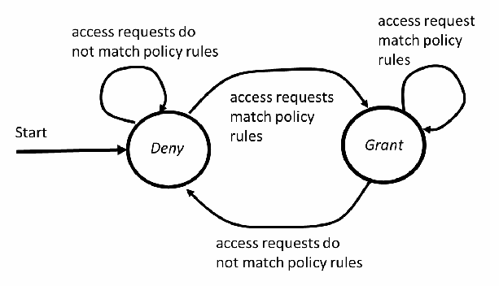
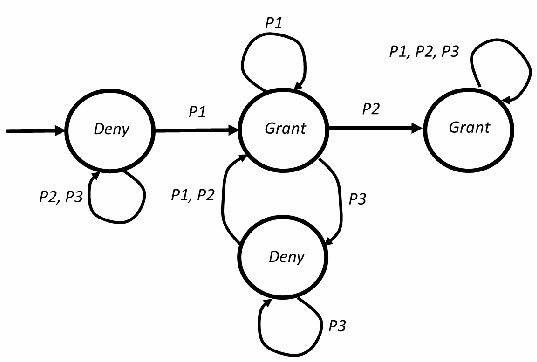
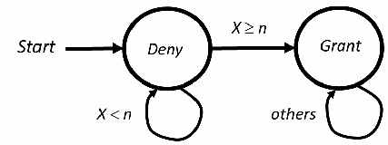
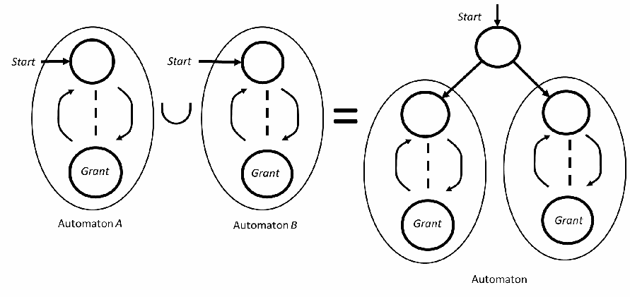
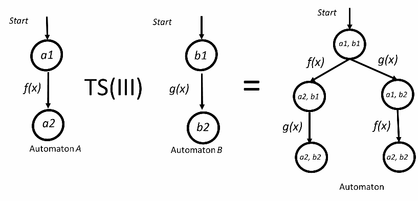
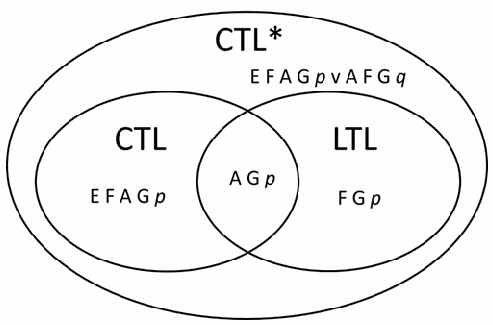
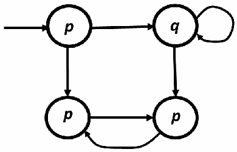
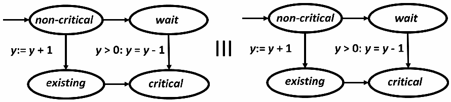

NIST IR 8539 日本語訳
英語タイトル : Security Property Verification by Transition Model日本語タイトル : 遷移モデルによるセキュリティ特性の検証
公開日 : 2025-01-31
原文URL : https://csrc.nist.gov/pubs/ir/8539/final
翻訳編集 : 自動生成（有志による非公式の日本語訳）, 原文取得日 : 2026-10-31, 訳文 : 282 / 283 ブロック
[要約] NIST IR 8539 は、アクセス制御ポリシーの遷移モデルにおけるセキュリティ特性を検証するために、モデル検査技術を適用する方法を説明する報告書です。モデル検査の基本を簡潔に紹介し、アクセス制御ポリシーが遷移モデルからオートマトンへどのように変換されるかを示します。線形時相論理（LTL）と計算木論理（CTL）による特性仕様を、両者を比較して論じます。さらに、検証プロセスと利用可能なツールを説明し、比較します。
NIST Internal Report
NIST 内部報告書
NIST IR 8539
NIST IR 8539
Security Property Verification by Transition Model
遷移モデルによるセキュリティ特性の検証
Vincent C. Hu
Vincent C. Hu
This publication is available free of charge from: https://doi.org/10.6028/NIST.IR.8539
本刊行物は次の場所から無料で入手できます: https://doi.org/10.6028/NIST.IR.8539
NIST Internal Report
NIST 内部報告書
NIST IR 8539
NIST IR 8539
Security Property Verification by Transition Model
遷移モデルによるセキュリティ特性の検証
Vincent C. Hu Computer Security Division Information Technology Laboratory
Vincent C. Hu Computer Security Division Information Technology Laboratory
This publication is available free of charge from: https://doi.org/10.6028/NIST.IR.8539
本刊行物は次の場所から無料で入手できます: https://doi.org/10.6028/NIST.IR.8539
January 2025
2025 年 1 月
［米国商務省の紋章。公的な標章のため、この非公式サイトには掲載していません。原本 PDF を参照してください。］
U.S. Department of Commerce Jeremy Pelter, Acting Secretary of Commerce
米国商務省 Jeremy Pelter 長官代行
National Institute of Standards and Technology
National Institute of Standards and Technology（国立標準技術研究所）
Craig Burkhardt, Acting Under Secretary of Commerce for Standards and Technology and Acting NIST Director
Craig Burkhardt、商務次官代理（標準・技術担当）兼 NIST 所長代理
Certain equipment, instruments, software, or materials, commercial or non-commercial, are identified in this paper in order to specify the experimental procedure adequately. Such identification does not imply recommendation or endorsement of any product or service by NIST, nor does it imply that the materials or equipment identified are necessarily the best available for the purpose.
本稿では、実験手順を適切に示すために、特定の機器、計器、ソフトウェア、材料が、商用か非商用かを問わず挙げられています。このように挙げることは、NIST がいかなる製品やサービスも推奨または保証することを意味せず、また、挙げられた材料や機器がその目的に対して必ずしも最良であることを意味するものでもありません。
There may be references in this publication to other publications currently under development by NIST in accordance with its assigned statutory responsibilities. The information in this publication, including concepts and methodologies, may be used by federal agencies even before the completion of such companion publications. Thus, until each publication is completed, current requirements, guidelines, and procedures, where they exist, remain operative. For planning and transition purposes, federal agencies may wish to closely follow the development of these new publications by NIST.
本刊行物には、NIST が法定の責務に従って現在策定中のほかの刊行物への言及が含まれる場合があります。概念や方法論を含む本刊行物の情報は、そうした関連刊行物が完成する前であっても、連邦政府機関が利用できます。したがって、各刊行物が完成するまでは、現行の要件、ガイドライン、手順が存在する場合、それらは引き続き有効です。計画および移行のため、連邦機関は、NIST によるこれらの新しい刊行物の策定状況を注意深く追うことを検討してもよいです。
Organizations are encouraged to review all draft publications during public comment periods and provide feedback to NIST. Many NIST cybersecurity publications, other than the ones noted above, are available at https://csrc.nist.gov/publications.
組織は、すべてのドラフト刊行物についてパブリックコメント期間中に内容を確認し、NIST にフィードバックを寄せることが推奨されます。上記以外にも、NIST の多くのサイバーセキュリティ刊行物が https://csrc.nist.gov/publications で入手できます。
NIST Technical Series Policies
Copyright, Use, and Licensing Statements
NIST Technical Series Publication Identifier Syntax
NIST 技術シリーズの方針
著作権、使用、ライセンスに関する声明
NIST 技術シリーズ刊行物識別子の構文
Publication History
Approved by the NIST Editorial Review Board on 2025-01-24
刊行の経緯
2025-01-24 に NIST 編集審査委員会により承認
How to Cite this NIST Technical Series Publication:
Hu VC (2024) Security Property Verification by Transition Model. (National Institute of Standards and Technology, Gaithersburg, MD), NIST Interagency or Internal Report (IR) NIST IR 8539. https://doi.org/10.6028/NIST.IR.8539
本 NIST 技術シリーズ刊行物の引用方法:
Hu VC (2024) Security Property Verification by Transition Model. (National Institute of Standards and Technology, Gaithersburg, MD), NIST Interagency or Internal Report (IR) NIST IR 8539. https://doi.org/10.6028/NIST.IR.8539
Author ORCID iDs
Vincent C. Hu: 0000-0002-1648-0584
著者の ORCID iD
Vincent C. Hu: 0000-0002-1648-0584
Contact Information
ir8539-comments@nist.gov
連絡先
ir8539-comments@nist.gov
National Institute of Standards and Technology
Attn: Computer Security Division, Information Technology Laboratory
100 Bureau Drive (Mail Stop 8930) Gaithersburg, MD 20899-8930
National Institute of Standards and Technology
Attn: Computer Security Division, Information Technology Laboratory
100 Bureau Drive (Mail Stop 8930) Gaithersburg, MD 20899-8930
Additional Information
Additional information about this publication is available at https://csrc.nist.gov/pubs/ir/8539/final, including related content, potential updates, and document history.
追加情報
本刊行物に関する追加情報（関連コンテンツ、更新の可能性、文書の履歴を含む）は、https://csrc.nist.gov/pubs/ir/8539/final で入手できます。
All comments are subject to release under the Freedom of Information Act (FOIA).
寄せられたコメントはすべて、情報自由法（FOIA）に基づく公開の対象となります。
Abstract
概要
Verifying the security properties of access control policies is a complex and critical task. The policies and their implementation often do not explicitly express their underlying semantics, which may be implicitly embedded in the logic flows of policy rules, especially when policies are combined. Instead of evaluating and analyzing access control policies solely at the mechanism level, formal transition models are used to describe these policies and verify the system’s security properties. This approach ensures that access control mechanisms can be designed to meet security requirements. This document explains how to apply model-checking techniques to verify security properties in transition models of access control policies. It provides a brief introduction to the fundamentals of model checking and demonstrates how access control policies are converted into automata from their transition models. The document then focuses on discussing property specifications in terms of linear temporal logic (LTL) and computation tree logic (CTL) languages with comparisons between the two. Finally, the verification process and available tools are described and compared.
アクセス制御ポリシーのセキュリティ特性の検証は、複雑で重要な作業です。ポリシーとその実装は、基礎となる意味論を明示的に表現していないことが多く、その意味論はポリシールールの論理の流れに暗黙的に埋め込まれていることがあります。ポリシーを組み合わせる場合は特にそうです。アクセス制御ポリシーを仕組みのレベルだけで評価・分析するのではなく、形式的な遷移モデルを用いてこれらのポリシーを記述し、システムのセキュリティ特性を検証します。この方法により、アクセス制御の仕組みを、セキュリティ要件を満たすように設計できます。本書では、アクセス制御ポリシーの遷移モデルにおけるセキュリティ特性を検証するために、モデル検査技術を適用する方法を説明します。モデル検査の基本を簡潔に紹介し、アクセス制御ポリシーが遷移モデルからオートマトンへとどのように変換されるかを示します。そのうえで、線形時相論理（LTL）と計算木論理（CTL）の言語による特性仕様に焦点を当て、両者を比較して論じます。最後に、検証プロセスと利用可能なツールを説明し、比較します。
Keywords
キーワード
access control; access control policy; model test; policy test; policy verification.
アクセス制御; アクセス制御ポリシー; モデル検査; ポリシー検査; ポリシー検証。
Reports on Computer Systems Technology
コンピュータシステム技術に関する報告書
The Information Technology Laboratory (ITL) at the National Institute of Standards and Technology (NIST) promotes the U.S. economy and public welfare by providing technical leadership for the Nation’s measurement and standards infrastructure. ITL develops tests, test methods, reference data, proof of concept implementations, and technical analyses to advance the development and productive use of information technology. ITL’s responsibilities include the development of management, administrative, technical, and physical standards and guidelines for the cost-effective security and privacy of other than national security-related information in federal information systems.
国立標準技術研究所（NIST）の情報技術ラボラトリー（ITL）は、国の測定・標準インフラに対する技術的リーダーシップを提供することで、米国の経済と公共の福祉を促進しています。ITL は、情報技術の発展と生産的な利用を進めるため、テスト、テスト方法、参照データ、概念実証の実装、技術分析を開発しています。ITL の責務には、連邦情報システムにおける国家安全保障関連以外の情報のセキュリティとプライバシーを費用対効果の高い方法で確保するための、管理上、行政上、技術上、物理上の標準およびガイドラインの策定が含まれます。
Patent Disclosure Notice
特許開示に関する通知
NOTICE: ITL has requested that holders of patent claims whose use may be required for compliance with the guidance or requirements of this publication disclose such patent claims to ITL. However, holders of patents are not obligated to respond to ITL calls for patents and ITL has not undertaken a patent search in order to identify which, if any, patents may apply to this publication.
通知: ITL は、本刊行物のガイダンスまたは要件への準拠に使用が必要となる可能性のある特許クレームの保有者に対し、当該特許クレームを ITL に開示するよう求めています。ただし、特許の保有者には ITL の特許募集に応じる義務はなく、ITL は、本刊行物に適用される特許があるかどうか、あるとすればどれかを特定するための特許調査を行っていません。
As of the date of publication and following call(s) for the identification of patent claims whose use may be required for compliance with the guidance or requirements of this publication, no such patent claims have been identified to ITL.
刊行日の時点で、本刊行物のガイダンスまたは要件への準拠に使用が必要となる可能性のある特許クレームの特定を求めた後も、そのような特許クレームは ITL に対して特定されていません。
No representation is made or implied by ITL that licenses are not required to avoid patent infringement in the use of this publication.
本刊行物の使用において特許侵害を避けるためにライセンスが不要であるとの表明を、ITL が行ったり示唆したりするものではありません。
Table of Contents
目次
List of Tables
表の一覧
List of Figures
図の一覧
Acknowledgments
謝辞
The author would like to express his thanks to Isabel Van Wyk and Jim Foti of NIST and Antonios Gouglidis of School of Computing and Communications Lancaster University for their detailed editorial review of both the public comment version and the final publication.
著者は、公開コメント版と最終刊行版の両方について詳細な編集レビューを行ってくれた、NIST の Isabel Van Wyk と Jim Foti、および Lancaster University School of Computing and Communications の Antonios Gouglidis に感謝します。
Executive Summary
エグゼクティブサマリー
Faults may be errors or weaknesses in the design or implementation of access control policies that can lead to serious vulnerabilities. This is particularly true when different access control policies are combined. The issue becomes increasingly critical as systems grow more complex, especially in distributed environments like the cloud and IoT, which manage large amounts of sensitive information and resources that are organized into sophisticated structures. Access control policies and their implementation often do not explicitly express their underlying semantics, which may be implicitly embedded in the logic flows of policy rules.
障害は、アクセス制御ポリシーの設計や実装における誤りまたは弱点であり、重大な脆弱性につながる可能性があります。これは特に、異なるアクセス制御ポリシーを組み合わせた場合に当てはまります。システムが複雑になるにつれてこの問題は一層重大になり、特に、大量の機微な情報とリソースを高度な構造で管理する、クラウドや IoT のような分散環境では顕著です。アクセス制御ポリシーとその実装は、基礎となる意味論を明示的に表現していないことが多く、その意味論はポリシールールの論理の流れに暗黙的に埋め込まれていることがあります。
Formal transition models are used to prove the policy’s security properties and ensure that access control mechanisms are designed to meet security requirements. This report explains how to apply model-checking techniques to verify security properties in transition models of access control policies. It provides a brief introduction to the fundamentals of model checking and demonstrates how access control policies are converted into automata from their transition models. The report also discusses property specifications in terms of linear time logic (LTL) and computation tree logic (CTL) with comparisons between the two. Finally, the verification process and available tools are described and compared.
形式的な遷移モデルは、ポリシーのセキュリティ特性を証明し、アクセス制御の仕組みがセキュリティ要件を満たすよう設計されていることを確実にするために使用されます。本報告書では、アクセス制御ポリシーの遷移モデルにおけるセキュリティ特性を検証するために、モデル検査技術を適用する方法を説明します。モデル検査の基本を簡潔に紹介し、アクセス制御ポリシーが遷移モデルからオートマトンへとどのように変換されるかを示します。また、線形時相論理（LTL）と計算木論理（CTL）による特性仕様についても、両者を比較して論じます。最後に、検証プロセスと利用可能なツールを説明し、比較します。
1. Introduction
1. はじめに
Faults can lead to serious vulnerabilities, particularly when different access control policies (ACPs) are combined. This issue becomes increasingly critical as systems grow more complex, especially in distributed environments like the cloud and IoT, which manage large amounts of sensitive information and resources that are organized into sophisticated structures. NIST Special Publication (SP) 800-192 [SP192] provides an overview of ACP verification using the model-checking method. However, it does not formally define the automata of transition models and properties, nor does it detail the processes and considerations for verifying access control security properties.
障害は、特に異なるアクセス制御ポリシー（ACP）を組み合わせた場合に、重大な脆弱性につながる可能性があります。システムが複雑になるにつれてこの問題は一層重大になり、特に、大量の機微な情報とリソースを高度な構造で管理する、クラウドや IoT のような分散環境では顕著です。NIST Special Publication（SP）800-192 [SP192] は、モデル検査法を用いた ACP 検証の概要を示しています。ただし、遷移モデルのオートマトンと特性を形式的に定義しておらず、アクセス制御のセキュリティ特性を検証するためのプロセスと考慮事項も詳述していません。
Instead of evaluating and analyzing ACPs solely at the mechanism level, formal models are typically developed to describe their security properties. An ACP transition model is a formal representation of the ACP as enforced by the mechanism and is valuable for proving the system’s theoretical limitations. This ensures that access control mechanisms are designed to adhere to the properties of the model. Generally, transition models are effective for modeling non-discretionary ACPs.
ACP を仕組みのレベルだけで評価・分析するのではなく、通常は、そのセキュリティ特性を記述する形式モデルが作成されます。ACP 遷移モデルは、仕組みによって実施される ACP の形式的な表現であり、システムの理論的な限界を証明するのに有用です。これにより、アクセス制御の仕組みが、モデルの特性に従うよう設計されていることが保証されます。一般に、遷移モデルは、非裁量型（non-discretionary）の ACP をモデル化するのに有効です。
An automaton is an abstraction of a self-operating transition model that follows a predetermined sequence of operations or responses. To formally verify the properties of ACP transition models through model checking, these models need to be converted into automata. This allows the rules of the ACP to be represented as a predetermined set of instructions within the automaton.
オートマトンとは、あらかじめ定められた一連の動作または応答に従う、自律的に動作する遷移モデルを抽象化したものです。モデル検査を通じて ACP 遷移モデルの特性を形式的に検証するには、これらのモデルをオートマトンに変換する必要があります。これにより、ACP のルールを、オートマトン内のあらかじめ定められた一連の命令として表現できます。
This document explains model-checking techniques for verifying access control security properties using the automata of ACP transition models. It briefly introduces the fundamentals of model checking and demonstrates how access control policies are converted into automata from transition models. The document then delves into discussions of property specifications using linear temporal logic (LTL) and computation tree logic (CTL) with comparisons between the two. The process of verification and the available tools are also described and compared. This document is organized as follows:
本書では、ACP 遷移モデルのオートマトンを用いてアクセス制御のセキュリティ特性を検証するためのモデル検査技術を説明します。モデル検査の基本を簡潔に紹介し、アクセス制御ポリシーが遷移モデルからオートマトンへとどのように変換されるかを示します。そのうえで、線形時相論理（LTL）と計算木論理（CTL）を用いた特性仕様について、両者を比較しながら掘り下げて論じます。検証のプロセスと利用可能なツールについても、説明し、比較します。本書の構成は次のとおりです。
•Section 1 is the introduction.
•第 1 節は、はじめにです。
•Section 2 provides an overview of formal models and ACPs.
•第 2 節では、形式モデルと ACP の概要を示します。
•Section 3 describes properties.
•第 3 節では、特性を説明します。
•Section 4 explains the property verification process.
•第 4 節では、特性の検証プロセスを説明します。
•Section 5 is the conclusion.
•第 5 節は、結論です。
•The References section lists cited publications and sources.
•参考文献の節に、引用した刊行物と情報源を列挙します。
2. Formal Models and ACPs
2. 形式モデルと ACP
This section explains the application of formal models to ACPs.
本節では、形式モデルを ACP に適用する方法を説明します。
2.1. Model Fundamentals
2.1. モデルの基礎
With general computational systems, one method to formally verify the properties of an ACP is to apply model checking. This process begins by describing the ACP as a transition model and converting it into an automata system, which is the mathematical structure used to represent and analyze the behavior of computational systems. The automata deal with the logic of computation concerning the ACP transition models and include various types, such as finite automata, Büchi automata, pushdown automata, Turing machines automata, linear bounded automata, and cellular automata. Both finite and Büchi automata have deterministic and nondeterministic types (i.e., DFA, NFA, DBA, and NBA).
一般的な計算システムでは、ACP の特性を形式的に検証する方法の 1 つとして、モデル検査を適用できます。このプロセスは、ACP を遷移モデルとして記述し、それをオートマトンシステムに変換することから始まります。オートマトンシステムとは、計算システムの振る舞いを表現し分析するために用いられる数学的構造です。オートマトンは、ACP 遷移モデルに関する計算の論理を扱い、有限オートマトン、ビュッヒオートマトン、プッシュダウンオートマトン、チューリング機械オートマトン、線形有界オートマトン、セルオートマトンなど、さまざまな種類があります。有限オートマトンとビュッヒオートマトンには、どちらも決定性と非決定性の種類があります（すなわち、DFA、NFA、DBA、NBA）。
In static and dynamic ACPs, each access control rule must lead to only one access state. There is only one permission result for each access request, which means that there are no nondeterministic state transitions in ACP automata. Additionally, there is generally no requirement for in-state memory in ACPs, making DFA and DBA sufficient to express ACP transition models for most access control models, such as attribute-based access control (ABAC), role-based access control (RBAC), workflow management, separation of duties (SOD), conflict of interest (COI), and N-person control [SP162]25. The following are some common features of automata applied to ACP models:
静的 ACP と動的 ACP のどちらでも、各アクセス制御ルールは、ただ 1 つのアクセス状態にだけ至らなければなりません。各アクセス要求に対する許可の結果は 1 つだけであり、ACP のオートマトンには非決定性の状態遷移がないことを意味します。さらに、一般に ACP では状態内のメモリは不要であるため、属性ベースアクセス制御（ABAC）、ロールベースアクセス制御（RBAC）、ワークフロー管理、職務分離（SOD）、利益相反（COI）、N 人制御など、ほとんどのアクセス制御モデルの ACP 遷移モデルを、DFA と DBA で十分に表現できます [SP162]25。ACP モデルに適用されるオートマトンの一般的な特徴は、次のとおりです。
•To represent the rules of an ACP, a deterministic automaton has a finite number of states, and each state has a unique deterministic transition for every access control request input or system action. This automaton is used to recognize security properties that are specified in the temporal logic of regular languages. In contrast, nondeterministic automata can have multiple transitions for a given input symbol, including transitions to multiple states or no states at all. Therefore, they are not applicable to ACPs, even though nondeterministic automata are also used to recognize regular languages.
•ACP のルールを表現するため、決定性オートマトンは有限個の状態を持ち、各状態は、あらゆるアクセス制御要求の入力またはシステムアクションに対して、一意に決まる遷移を持ちます。このオートマトンは、正規言語の時相論理によって規定されたセキュリティ特性を認識するために使用されます。これに対して、非決定性オートマトンは、与えられた入力記号に対して、複数の状態への遷移や、どの状態にも遷移しないものを含む、複数の遷移を持つことができます。したがって、非決定性オートマトンも正規言語の認識に用いられますが、ACP には適用できません。
•An ACP may require monitoring the current state continuously, so automata must be capable of handling infinite sequences of inputs. Such automata are called Büchi automata (BA), which are designed to determine whether a language is accepted in infinite words. A word is accepted by a BA if there is a run in which some accepting state occurs infinitely often. In contrast to finite automata (FA), which accept finite words that must end in an accepting state, BA can accept infinite words as long as there is a run (or trace) of the automaton that passes through an accepting state.
•ACP は現在の状態を継続的に監視する必要がある場合があるため、オートマトンは無限の入力列を扱えなければなりません。このようなオートマトンはビュッヒオートマトン（BA）と呼ばれ、無限語からなる言語を受理するかどうかを判定するよう設計されています。ある実行で受理状態が無限回出現する場合、その語は BA に受理されます。有限語を受理し、受理状態で終わらなければならない有限オートマトン（FA）とは異なり、BA は、オートマトンの実行（またはトレース）が受理状態を通過するものがある限り、無限語を受理できます。
•Some ACPs may be constructed using “deny” conditions instead of “grant” conditions. In such cases, they can utilize the complement of DFA language by switching accepting states to non-accepting states and vice versa for the ACP transition models. However, this feature applies only to DFA and not to BA.
•一部の ACP は、「許可」の条件ではなく「拒否」の条件を用いて構成されている場合があります。その場合、ACP 遷移モデルについて、受理状態を非受理状態に、非受理状態を受理状態に切り替えることで、DFA の言語の補集合を利用できます。ただし、この特徴は DFA にのみ適用され、BA には適用されません。
•To evaluate access permissions, the automaton’s accepting states represent either the grant or deny permissions of ACP, depending on the default setting and specific system actions. If an input move triggered by an access request cannot reach an accepting state (e.g., grant, deny, or specific system actions), it indicates that the request is invalid. In this case, the request is assigned the default permission while the automaton remains in the same state.
•アクセス許可を評価するため、オートマトンの受理状態は、既定の設定と特定のシステムアクションに応じて、ACP の許可または拒否を表します。アクセス要求によって引き起こされた入力遷移が受理状態（許可、拒否、特定のシステムアクションなど）に到達できない場合、その要求が無効であることを示します。この場合、要求には既定の許可が割り当てられ、オートマトンは同じ状態にとどまります。
•An “empty automaton” typically refers to a type of finite automaton that does not accept any input string nor recognizes any language, including the empty string. An empty automaton signifies an ACP that blocks all valid access requests. Therefore, if a valid input access request (e.g., the subjects, actions, and objects of the request are recognizable) does not transition to any accepting state (e.g., grant, deny, or other acceptable states), it indicates that the automaton does not correctly represent the ACP.
•「空オートマトン」とは、通常、空文字列を含め、いかなる入力文字列も受理せず、いかなる言語も認識しない種類の有限オートマトンを指します。空オートマトンは、すべての有効なアクセス要求を遮断する ACP を意味します。したがって、有効な入力アクセス要求（たとえば、要求のサブジェクト、アクション、オブジェクトが認識可能なもの）がどの受理状態（許可、拒否、その他の受理可能な状態など）にも遷移しない場合、そのオートマトンは ACP を正しく表現していないことを示します。
2.2. ACP Automata
2.2. ACP のオートマトン
This section illustrates how static and dynamic ACP models are translated into automata.
本節では、静的 ACP モデルと動的 ACP モデルをオートマトンに変換する方法を説明します。
2.2.1. Static ACPs
2.2.1. 静的 ACP
Static ACPs regulate access permissions based on static system states that are defined by conditions, such as attribute propositions and system environments (e.g., time, location). Some popular static ACP models include access control lists (ACLs), ABAC, and RBAC, where the ACPs are typically defined by rules that specify access control variables, including subjects, actions, objects, and environmental conditions. These ACPs are specified by independent (i.e., asynchronous) states within an automaton. A current state/next state pair is only included in the transition relation if it satisfies the ACP rule variables, as illustrated in the example of random ACP rules shown in Fig. 1.
静的 ACP は、属性命題やシステム環境（時刻、場所など）といった条件で定義される静的なシステム状態に基づいて、アクセス許可を規制します。一般的な静的 ACP モデルには、アクセス制御リスト（ACL）、ABAC、RBAC があり、これらの ACP は通常、サブジェクト、アクション、オブジェクト、環境条件を含むアクセス制御変数を規定するルールで定義されます。これらの ACP は、オートマトン内の独立した（すなわち非同期の）状態によって規定されます。現在状態と次状態の組は、ACP ルールの変数を満たす場合にのみ遷移関係に含まれます。図 1 のランダムな ACP ルールの例に示すとおりです。

Deny（拒否）と Grant（許可）の 2 つの状態（いずれも太線の円）からなる状態遷移図です。Start（開始）の矢印が Deny に入ります。Deny には「アクセス要求がポリシー規則に一致しない」という自己ループと、「アクセス要求がポリシー規則に一致する」という Grant への遷移があります。Grant には「アクセス要求がポリシー規則に一致する」という自己ループと、「アクセス要求がポリシー規則に一致しない」という Deny への遷移があります。
Fig. 1. Example automaton of a random rules ACP
図 1. ランダムなルールの ACP のオートマトンの例
In the automaton, the access authorization state is initialized as the deny state and transitions to the grant state for any access request that complies with the rule’s constraints. Otherwise, it remains in the deny state. Even though environmental condition variables (e.g., time, location) may change through monitoring, they do not affect state transitions from the perspective of the automaton.
このオートマトンでは、アクセス認可の状態は拒否状態に初期化され、ルールの制約に従うアクセス要求があれば許可状態に遷移します。そうでなければ、拒否状態にとどまります。環境条件の変数（時刻、場所など）は監視によって変化する場合がありますが、オートマトンの観点からは、状態遷移に影響しません。
2.2.2. Dynamic ACPs
2.2.2. 動的 ACP
Dynamic ACPs regulate access permissions based on temporal constraints or access status, such as specified events triggered by permitted access or system counters/variables controlled and/or monitored by the ACP. The automata typically contain more than one accepting state. An example of a dynamic ACP is the Chinese Wall model, which enforces a conflict-of-interest property. For instance, if Subject 1 accesses Object X, then Subject 2 is not allowed to access the same object, as illustrated in the automaton shown in Fig. 2.
動的 ACP は、時間的な制約やアクセス状況に基づいて、アクセス許可を規制します。たとえば、許可されたアクセスによって引き起こされる特定のイベントや、ACP が制御または監視するシステムのカウンター／変数に基づきます。オートマトンは通常、複数の受理状態を持ちます。動的 ACP の例として、利益相反の特性を実施する Chinese Wall モデルがあります。たとえば、サブジェクト 1 が オブジェクト X にアクセスした場合、サブジェクト 2 は同じオブジェクトにアクセスできません。図 2 のオートマトンに示すとおりです。
![State diagram of a Chinese Wall policy. An incoming arrow enters the initial state Deny (thick circle) at the top. From it, a transition labeled P1, P4 leads to a Grant state on the left, and a transition labeled P2, P3 leads to a Grant state on the right (both thick circles). The left Grant has a self-loop P1, P4 and a transition P2, P3 to a Deny state (thin circle) below it; that Deny has a self-loop P2, P3 and a transition P1, P4 back to the left Grant. The right Grant has a self-loop P2, P3 and a transition P1, P4 to a Deny state (thin circle) below it; that Deny has a self-loop P1, P4 and a transition P2, P3 back to the right Grant.](assets/ir-8539/p0013-figure-01.png)
Chinese Wall（チャイニーズウォール）ポリシーの状態遷移図です。上部の初期状態 Deny（拒否。太線の円）に矢印が入ります。そこから P1, P4 の遷移で左の Grant（許可）へ、P2, P3 の遷移で右の Grant へ進みます（いずれも太線の円）。左の Grant には P1, P4 の自己ループと、下の Deny（細線の円）への P2, P3 の遷移があり、その Deny には P2, P3 の自己ループと、左の Grant へ戻る P1, P4 の遷移があります。右の Grant には P2, P3 の自己ループと、下の Deny（細線の円）への P1, P4 の遷移があり、その Deny には P1, P4 の自己ループと、右の Grant へ戻る P2, P3 の遷移があります。
Fig. 2. Example automaton of a Chinese Wall ACP
図 2. Chinese Wall ACP のオートマトンの例
Valid access requests in this scenario include P1: Subject 1 accesses Object X, P2: Subject 2 accesses Object Y, P3: Subject 1 accesses Object Y, and P4: Subject 2 accesses Object X.
このシナリオで有効なアクセス要求には、P1: サブジェクト 1 が オブジェクト X にアクセスする、P2: サブジェクト 2 が オブジェクト Y にアクセスする、P3: サブジェクト 1 が オブジェクト Y にアクセスする、P4: サブジェクト 2 が オブジェクト X にアクセスする、があります。
Figure 3 presents an automaton for the Workflow ACP model, where access P3 is only allowed after P2, and access P2 is only allowed after P1.
図 3 は、ワークフロー ACP モデルのオートマトンを示しており、アクセス P3 は P2 の後にのみ許可され、アクセス P2 は P1 の後にのみ許可されます。

Workflow（ワークフロー）ポリシーの状態遷移図です。左の初期状態 Deny（拒否）に矢印が入り、Deny には P2, P3 の自己ループがあります。Deny から P1 で中央の Grant（許可）へ遷移し、中央の Grant には P1 の自己ループがあります。中央の Grant から P2 で右の Grant へ遷移し、右の Grant には P1, P2, P3 の自己ループがあります。また、中央の Grant から P3 で下の Deny へ遷移し、その Deny には P3 の自己ループと、中央の Grant へ戻る P1, P2 の遷移があります。
Fig. 3. Example automaton of a Workflow ACP
図 3. ワークフロー ACP のオートマトンの例
Figure 4 depicts an automaton for an N-person control ACP model in which an object can only be accessed when the access count X exceeds a specified value n.
図 4 は、N 人制御 ACP モデルのオートマトンを示しており、アクセス回数 X が指定値 n を超えた場合にのみ、オブジェクトにアクセスできます。

N-person control（N 人制御）ポリシーの状態遷移図です。Start（開始）の矢印が Deny（拒否）に入り、Deny には X < n の自己ループがあります。Deny から X ≥ n で Grant（許可）へ遷移し、Grant には others（その他）の自己ループがあります。
Fig. 4. Example automaton of an N-person Control ACP
図 4. N 人制御 ACP のオートマトンの例
2.3. ACP combinations
2.3. ACP の組み合わせ
An ACP is not necessarily expressed by a single model. It can also be implicitly embedded by being mixed with other ACP models or a random set of access rules. Consequently, an ACP automaton may be represented by combining multiple ACP automata or adding constraint states outside of ACP models. Such a combined ACP must concurrently manage access to achieve the unified access control behavior that results from the incorporation or federation of multiple ACPs or rules. In practical applications, for instance, a local system’s ACP may need to be integrated with a global ACP (or meta ACP) in a distributed system environment, such as in cloud computing or IoT devices with centralized access control.
ACP は、必ずしも単一のモデルで表現されるわけではありません。ほかの ACP モデルや任意のアクセスルールの集合と混在する形で、暗黙的に組み込まれている場合もあります。そのため、ACP のオートマトンは、複数の ACP のオートマトンを組み合わせるか、ACP モデルの外側に制約状態を追加することで表現される場合があります。このように組み合わされた ACP は、複数の ACP やルールの統合またはフェデレーションから生じる、統一されたアクセス制御の振る舞いを実現するため、アクセスを並行して管理しなければなりません。実際の適用では、たとえば、クラウドコンピューティングや、集中管理されたアクセス制御を持つ IoT デバイスのような分散システム環境で、ローカルシステムの ACP をグローバルな ACP（またはメタ ACP）と統合する必要がある場合があります。
In general, ACP combinations can be divided into two categories: nonconcurrent and concurrent combinations. A nonconcurrent combination does not require synchronization between the combined ACPs, while a concurrent combination needs to account for the synchronization of shared states or variables between the ACPs. To ensure that the combined ACP functions correctly, it is essential to formally detect any inconsistencies or incompleteness, such as scenarios in which an access request is both accepted and denied or where the request is neither accepted nor denied according to the combined automata [SP192]. Each type of combination has distinct characteristics.
一般に、ACP の組み合わせは、非並行の組み合わせと並行の組み合わせの 2 つに分けられます。非並行の組み合わせでは、組み合わされる ACP 間の同期は不要ですが、並行の組み合わせでは、ACP 間で共有される状態や変数の同期を考慮する必要があります。組み合わされた ACP が正しく機能することを確実にするには、不整合や不完全性を形式的に検出することが不可欠です。たとえば、組み合わされたオートマトンによると、アクセス要求が受理されると同時に拒否される場合や、受理も拒否もされない場合などです [SP192]。組み合わせの種類ごとに、それぞれ異なる特徴があります。
2.3.1. Nonconcurrent ACP Combinations
2.3.1. 非並行な ACP の組み合わせ
In general, nonconcurrent ACP combinations include intersection, union, and concatenation. These ACPs can be combined offline before the system’s authorization process is executed.
一般に、非並行な ACP の組み合わせには、積（intersection）、和（union）、連接（concatenation）があります。これらの ACP は、システムの認可プロセスが実行される前にオフラインで組み合わせることができます。
2.3.1.1. Intersection
2.3.1.1. 積（Intersection）
An access control system that requires its resources to be managed by different ACPs with common control elements (e.g., subjects, objects, or environmental conditions) means that organizations \(O_1\), \(O_2\),…., \(O_n\) have equal authority over a shared resource. To access this resource, an access request must be granted by each organization, which necessitates the use of an intersection automaton.
共通の制御要素（サブジェクト、オブジェクト、環境条件など）を持つ異なる ACP によってリソースを管理する必要があるアクセス制御システムでは、組織 \(O_1\)、\(O_2\)、…、\(O_n\) が、共有リソースに対して同等の権限を持ちます。このリソースにアクセスするには、アクセス要求が各組織によって許可される必要があり、そのために積オートマトンを用いる必要があります。
Let \(A_i\) represent the automaton of \(\mathit{ACP}_i\) for organization \(O_i\). The intersection of automata \(A_1\), \(A_2\),…., \(A_n\) is denoted as \(A_1 \cap A_2 \ldots \cap A_n\), which forms a new automaton in which the set of states, transition functions, initial states, and accepting states are defined such that it accepts a “string of access requests” (“string” for brevity) if and only if \(A_1\), \(A_2\),…., \(A_n\) accept it. In other words, the new automaton recognizes the “language that represents all possible access request sequences” (“language” for brevity) that contains only those strings accepted by \(A_1\), \(A_2\),…., \(A_n\). A string is accepted by the intersection automaton if and only if it is accepted by the behavior of all original automata. The intersection operation requires the Cartesian product (i.e., dot product) of the state spaces of \(A_1\), \(A_2\),…., \(A_n\): \(A_1 \times A_2 \ldots \times A_n\) (or \(A_1 \bullet A_2 \ldots \bullet A_n\)). This means that the resulting automaton consists of states that combine the states from \(A_1\), \(A_2\),…., \(A_n\). The intersection operation focuses on the common language recognized by all automata, while the product operation emphasizes the combination of the behaviors of the automata. Figure 5 illustrates the concept of intersection using an example of two automata: \(A \cap B\).
\(A_i\) を、組織 \(O_i\) の \(\mathit{ACP}_i\) のオートマトンとします。オートマトン \(A_1\)、\(A_2\)、…、\(A_n\) の共通部分は \(A_1 \cap A_2 \ldots \cap A_n\) と表されます。これは、「アクセス要求の文字列」（以下、簡潔に「文字列」）を、\(A_1\)、\(A_2\)、…、\(A_n\) がすべて受理する場合に限って受理するよう、状態の集合、遷移関数、初期状態、受理状態が定義された新しいオートマトンを形成します。言い換えると、新しいオートマトンは、「あらゆるアクセス要求列を表す言語」（以下、簡潔に「言語」）のうち、\(A_1\)、\(A_2\)、…、\(A_n\) が受理する文字列だけを含むものを認識します。文字列が共通部分オートマトンに受理されるのは、元のすべてのオートマトンの振る舞いによって受理される場合に限られます。共通部分の演算には、\(A_1\)、\(A_2\)、…、\(A_n\) の状態空間のデカルト積（すなわちドット積）である \(A_1 \times A_2 \ldots \times A_n\)（または \(A_1 \bullet A_2 \ldots \bullet A_n\)）が必要です。これは、結果として得られるオートマトンが、\(A_1\)、\(A_2\)、…、\(A_n\) の状態を組み合わせた状態から成ることを意味します。共通部分の演算は、すべてのオートマトンが認識する共通の言語に焦点を当て、積の演算は、オートマトンの振る舞いの組み合わせを重視します。図 5 は、2 つのオートマトンの例 \(A \cap B\) を用いて、共通部分の概念を示しています。
![Concept diagram: Automaton A ∩ Automaton B = Automaton. Each automaton is drawn as an ellipse containing a Start arrow into an initial state, a dashed line with curved arrows indicating intermediate transitions, and a final state labeled Grant. The resulting automaton on the right is a single ellipse in which the states of A and B are paired side by side: the start state links to a second state, both columns have dashed paths downward, and the bottom-left state links to a single Grant state at the bottom right.](assets/ir-8539/p0015-figure-01.png)
概念図で、Automaton A ∩ Automaton B = Automaton を示します。各オートマトンは楕円で描かれ、中に Start（開始）の矢印が入る初期状態、途中の遷移を表す破線と曲線の矢印、Grant（許可）と書かれた最終状態があります。右側の結果のオートマトンは 1 つの楕円で、A と B の状態が左右に並んで組になっています。開始状態から 2 つ目の状態へ矢印があり、両方の列に下向きの破線の経路があり、左下の状態から右下の 1 つの Grant 状態へ矢印があります。
Fig. 5. Intersection concept using an example of two automata
図 5. 2 つのオートマトンの例による積の概念
2.3.1.2. Union
2.3.1.2. 和（Union）
An access control system allows any subject from the joined systems to access the resources managed by any of them (e.g., coupon discounts offered to all customers of allied businesses). This union operation can be implemented using a union automaton, which simply merges multiple automata into a single one and enables each automaton to operate independently without consulting the others.
アクセス制御システムでは、結合されたシステムのどのサブジェクトも、そのいずれかが管理するリソースにアクセスできます（たとえば、提携企業のすべての顧客に提供されるクーポン割引）。この和の演算は、和オートマトンを用いて実装できます。和オートマトンは、複数のオートマトンを単一のオートマトンに単純に統合し、各オートマトンがほかを参照することなく独立して動作できるようにします。
For example, let \(A_i\) represent the automaton of \(\mathit{ACP}_i\), which is the ACP of the joined business \(B_i\). The union of automata \(A_1\), \(A_2\),…., \(A_n\) is denoted as \(A_1 \cup A_2 \ldots. \cup A_n\) and forms a new automaton in which the set of states, transition functions, initial state, and accepting states are defined and operate independently in each \(A_x\). An initial state is added to the union of the automata to accept all access requests and determine which \(A_x\) should handle an input access request. Figure 6 illustrates the union concept with an example of two automata: \(A \cup B\).
たとえば、\(A_i\) を、結合された企業 \(B_i\) の ACP である \(\mathit{ACP}_i\) のオートマトンとします。オートマトン \(A_1\)、\(A_2\)、…、\(A_n\) の和は \(A_1 \cup A_2 \ldots. \cup A_n\) と表され、状態の集合、遷移関数、初期状態、受理状態が、各 \(A_x\) で独立に定義され動作する、新しいオートマトンを形成します。和オートマトンには、すべてのアクセス要求を受け付け、入力されたアクセス要求をどの \(A_x\) が処理すべきかを判断する初期状態が追加されます。図 6 は、2 つのオートマトン \(A \cup B\) の例で、和の概念を示しています。

概念図で、Automaton A ∪ Automaton B = Automaton を示します。各オートマトンは楕円で描かれ、中に Start（開始）の矢印が入る初期状態、途中の遷移を表す破線と曲線の矢印、Grant（許可）と書かれた最終状態があります。右側の結果のオートマトンでは、上部に新しい開始状態があり、そこから 2 本の矢印が 2 つの楕円の初期状態へ伸びます。2 つの楕円は Automaton A と Automaton B の写しで、それぞれ自身の Grant 状態で終わります。
Fig. 6. Union concept using an example of two automata
図 6. 2 つのオートマトンの例による和の概念
2.3.1.3. Concatenation
2.3.1.3. 連接（Concatenation）
Access control systems that manage the sequence of user requests or processes should consider concatenating ACPs for workflow operations. For instance, this approach is essential in an assembly line that requires approval in a predefined sequence by different work units, each of which has its own unique ACP.
ユーザー要求やプロセスの順序を管理するアクセス制御システムでは、ワークフロー運用のために ACP の連接を検討すべきです。たとえば、この方法は、各々が固有の ACP を持つ異なる作業単位によって、あらかじめ定められた順序で承認が必要となる組立ラインでは不可欠です。
Let \(A_i\) represent the automaton of \(\mathit{ACP}_i\), which corresponds to work unit \(W_i\). The concatenation of automata \(A_1\), \(A_2\),…., \(A_n\) involves connecting these automata end to end such that the output of the first automaton serves as the input to the next. Formally, \(A_1 + A_2 \ldots. + A_n\) denotes the automaton that results from linking the accepting states of \(A_1\) to the initial state of \(A_2\), the accepting states of \(A_2\) to the initial state of \(A_3\), and so on. This process effectively creates a new automaton that recognizes strings accepted first by \(A_1\), which then pass through the subsequent concatenated automata until reaching \(A_n\). Figure 7 illustrates the concept of concatenation with an example of two automata: \(A + B\).
\(A_i\) を、作業単位 \(W_i\) に対応する \(\mathit{ACP}_i\) のオートマトンとします。オートマトン \(A_1\)、\(A_2\)、…、\(A_n\) の連接は、これらのオートマトンを、最初のオートマトンの出力が次のオートマトンの入力となるように、端から端へつなぐことを意味します。形式的には、\(A_1 + A_2 \ldots. + A_n\) は、\(A_1\) の受理状態を \(A_2\) の初期状態に、\(A_2\) の受理状態を \(A_3\) の初期状態に、というように接続した結果のオートマトンを表します。この処理により、まず \(A_1\) に受理され、その後、後続の連接されたオートマトンを経て \(A_n\) に至るまで通過する文字列を認識する、新しいオートマトンが効果的に作成されます。図 7 は、2 つのオートマトン \(A + B\) の例で、連接の概念を示しています。
![Concept diagram: Automaton A + Automaton B = Automaton. Each automaton is drawn as an ellipse containing a Start arrow into an initial state, a dashed line with curved arrows indicating intermediate transitions, and a final state labeled Grant. The resulting automaton on the right consists of two overlapping ellipses: the first has the Start state and ends in a final state (no longer labeled Grant), which has an arrow to the initial state of the second ellipse; the second ellipse ends in the Grant state.](assets/ir-8539/p0017-figure-01.png)
概念図で、Automaton A + Automaton B = Automaton を示します。各オートマトンは楕円で描かれ、中に Start（開始）の矢印が入る初期状態、途中の遷移を表す破線と曲線の矢印、Grant（許可）と書かれた最終状態があります。右側の結果のオートマトンは重なった 2 つの楕円からなります。1 つ目の楕円には開始状態があり、最終状態（Grant の表示はない）から 2 つ目の楕円の初期状態へ矢印が伸びます。2 つ目の楕円は Grant 状態で終わります。
Fig. 7. Concatenation concept using an example of two automata
図 7. 2 つのオートマトンの例による連接の概念
2.3.2. Concurrent ACP Combinations
2.3.2. 並行な ACP の組み合わせ
Concurrent (i.e., interleaving or parallel) ACP combinations can be represented by an automaton in which each ACP automaton signifies a process or component, and transitions between states represent possible actions or events that can occur in parallel. These automata typically operate concurrently, allowing multiple AC authorization processes to be executed simultaneously, similar to multi-threaded programs, distributed systems, and hardware circuits. Analyzing concurrent automata can provide insights into the authorization processes of ACPs when they interact and address related issues, such as race conditions, deadlocks, and communication protocols. Generally, concurrent automata involve independent and shared variables as well as shared actions. This type of combination is performed online while authorization is in progress.
並行な（すなわちインタリーブまたは並列の）ACP の組み合わせは、各 ACP のオートマトンがプロセスまたは構成要素を表し、状態間の遷移が並列に発生しうる動作やイベントを表すオートマトンで表現できます。これらのオートマトンは通常、並行して動作し、マルチスレッドプログラム、分散システム、ハードウェア回路と同様に、複数の AC 認可プロセスを同時に実行できます。並行オートマトンを分析すると、ACP が相互に作用する際の認可プロセスについて、また競合状態、デッドロック、通信プロトコルなどの関連する問題への対処について、知見が得られます。一般に、並行オートマトンには、独立変数と共有変数、および共有アクションが関与します。この種の組み合わせは、認可が進行している間にオンラインで行われます。
2.3.2.1. Independent
2.3.2.1. 独立
Some situation-awarded ACPs rely on synchronized states to determine access permissions (e.g., air traffic control systems monitor multiple runway situations to manage access to runways). Such systems can employ independent concurrent automata for safety checks, similar to a traffic light system that only permits specific light combinations. The interleaving of independent systems operates in a way that allows their states to change dynamically and interleave with one another, meaning that the authorization processes run independently and disregard the order in which they are executed. This type of combination is a variant of the nonconcurrent intersection combinations (see Sec. 2.3.1). Each ACP has its own set of environment variables so that instead of sharing variables or actions, they share system states. Formally, \(A_1\) III \(A_2\)…. III \(A_n\), where \(A_i\) represents the automaton of \(\mathit{ACP}_i\) for concurrent access control system \(S_i\)’s ACP, and the symbol III is the interleaving operator. Figure 8 illustrates the concept of independent concurrency with an example of two automata: A III B [BK].
状況認識型の ACP の中には、アクセス許可を決定するために同期された状態に依存するものがあります（たとえば、航空交通管制システムは、滑走路へのアクセスを管理するために複数の滑走路の状況を監視します）。このようなシステムは、特定の信号の組み合わせだけを許可する信号機システムと同様に、安全性チェックのために独立した並行オートマトンを使用できます。独立したシステムのインタリーブは、状態が動的に変化して互いにインタリーブできるように動作します。すなわち、認可プロセスは独立して実行され、実行される順序は考慮されません。この種の組み合わせは、非並行の積による組み合わせ（2.3.1 節を参照）の一種です。各 ACP は固有の環境変数の集合を持つため、変数やアクションではなく、システムの状態を共有します。形式的には、\(A_1\) III \(A_2\)…. III \(A_n\) です。ここで \(A_i\) は並行アクセス制御システム \(S_i\) の ACP である \(\mathit{ACP}_i\) のオートマトンを表し、記号 III はインタリーブ演算子です。図 8 は、2 つのオートマトン A III B の例で、独立した並行性の概念を示しています [BK]。
![Concept diagram: Automaton A ||| Automaton B = Automaton. Automaton A has a Start arrow into state a1 and transitions a1 → a2 and a2 → a1. Automaton B has a Start arrow into state b1 and transitions b1 → b2 and b2 → b1. The resulting interleaved automaton has four states arranged in a diamond: (a1, b1) at the top with the Start arrow, (a2, b1) on the left, (a1, b2) on the right, and (a2, b2) at the bottom; two-way transitions connect (a1, b1) with (a2, b1) and with (a1, b2), and connect (a2, b2) with (a2, b1) and with (a1, b2).](assets/ir-8539/p0018-figure-01.png)
概念図で、Automaton A ||| Automaton B = Automaton を示します。Automaton A は Start（開始）の矢印が状態 a1 に入り、a1 → a2 と a2 → a1 の遷移があります。Automaton B は Start の矢印が状態 b1 に入り、b1 → b2 と b2 → b1 の遷移があります。結果のインタリーブされたオートマトンは菱形に並んだ 4 つの状態からなり、上に開始の矢印が入る (a1, b1)、左に (a2, b1)、右に (a1, b2)、下に (a2, b2) があります。(a1, b1) は (a2, b1) と (a1, b2) の双方と、(a2, b2) も (a2, b1) と (a1, b2) の双方と、それぞれ双方向の遷移で結ばれています。
Fig. 8. Example of a combination of two interleaving automata
図 8. 2 つのインタリーブするオートマトンの組み合わせの例
2.3.2.2. Shared Variables
2.3.2.2. 共有変数
For ACPs that require shared variable control (e.g., n-person control, mutual exclusion, and SOD models), their shared variables (e.g., the number of accesses or indicators of current access states) are essential for authorization processes. If these shared global variables are managed by automata in an independent concurrent combination (as described in an independent combination) and each ACP is permitted to modify them, then conflicts may arise that lead to inconsistent results for the same variables. Therefore, the concurrent automaton for shared variables must incorporate change actions as inputs for state transitions rather than merely interleaving states. Formally, this can be represented as TS(\(S_1\) III \(S_2\)…. III \(S_2\)) instead of \(S_1\) III \(S_2\)…. III \(S_n\), where TS represents the transition model. Figure 9 illustrates the concept of shared variables with an example of two automata, where x is a shared variable, and f(x) and g(x) are actions that modify x.
共有変数の制御を必要とする ACP（たとえば、N 人制御、相互排他、SOD のモデル）では、その共有変数（たとえば、アクセス回数や現在のアクセス状態を示す指標）が認可プロセスに不可欠です。これらの共有グローバル変数が、独立した並行の組み合わせ（独立の組み合わせで説明したもの）のオートマトンによって管理され、各 ACP がそれらを変更することを許可されている場合、競合が発生し、同じ変数に対して不整合な結果が生じる可能性があります。そのため、共有変数のための並行オートマトンは、状態を単にインタリーブするのではなく、状態遷移の入力として変更アクションを組み込まなければなりません。形式的には、\(S_1\) III \(S_2\)…. III \(S_n\) ではなく、TS(\(S_1\) III \(S_2\)…. III \(S_2\)) と表すことができます。ここで TS は遷移モデルを表します。図 9 は、2 つのオートマトンの例で、共有変数の概念を示しています。ここで x は共有変数、f(x) と g(x) は x を変更するアクションです。

概念図で、Automaton A TS(|||) Automaton B = Automaton を示します。Automaton A は Start（開始）の矢印が状態 a1 に入り、f(x) で a2 へ遷移します。Automaton B は Start の矢印が状態 b1 に入り、g(x) で b2 へ遷移します。結果のオートマトンは木の形で、開始が (a1, b1) に入り、f(x) で (a2, b1) へ、g(x) で (a1, b2) へ進みます。(a2, b1) からは g(x) で (a2, b2) へ、(a1, b2) からは f(x) で別の (a2, b2) へ進みます。
Fig. 9. Shared variables concept with an example of two automata
図 9. 2 つのオートマトンの例による共有変数の概念
A common example of a shared variable combination automaton is the enforcement of a limited number of concurrent accesses to an object. In this case, the authorization process for a subject consists of four states: idle, entering, critical, and exiting. The subject typically starts in the idle state. When the user requests access to the critical object, the subject transitions to the entering state. If the limit on concurrent access has not been reached, the subject then moves to the critical state, and the current access count is incremented by 1. Once the subject finishes accessing the critical object, it transitions to the exiting state, and the current access count is decremented by 1. Finally, the subject moves from the exiting state back to the idle state. The shared variable automaton can be modeled in the following example in pseudocode [SP192].
共有変数の組み合わせオートマトンの一般的な例は、オブジェクトへの同時アクセスの数の制限を実施する場合です。この場合、サブジェクトの認可プロセスは、アイドル、進入、クリティカル、退出の 4 つの状態から成ります。サブジェクトは通常、アイドル状態から始まります。ユーザーがクリティカルなオブジェクトへのアクセスを要求すると、サブジェクトは進入状態に遷移します。同時アクセスの上限に達していなければ、サブジェクトはクリティカル状態に移り、現在のアクセス回数が 1 増加します。サブジェクトがクリティカルなオブジェクトへのアクセスを終えると、退出状態に遷移し、現在のアクセス回数が 1 減少します。最後に、サブジェクトは退出状態からアイドル状態に戻ります。共有変数オートマトンは、次の擬似コードの例のようにモデル化できます [SP192]。
{ VARIABLES
count, access_limit : INTEGER;
request_1 : process_request (count);
request_2 : process_request (count);
…….
request_n: process_request (count);
/*max number of user requests allowed by the system*/
access_limit := k; /*max number of concurrent access*/
count := 0; act {rd, wrt}; object {obj};
process_request (access_limit) {
VARIABLES
permission : {start, grant, deny};
state : {idle, entering, critical, exiting};
INITIAL_STATE (permission) := start;
INITIAL_STATE (state) := idle;
NEXT_STATE (state) := CASE {
state == idle : {idle, entering};
state == entering & ! (count > access_limit): critical;
state == critical : {critical, exiting};
state == exiting : idle;
OTHERWISE: state};
NEXT_STATE (count) := CASE {
state == entering : count + 1;
state == exiting : count -1;
OTHERWISE: DO_NOTHING };
NEXT_STATE (permission) := CASE {
(state == entering)& (act == rd) & (object == obj): grant;
OTHERWISE: deny;}
}
}
{ VARIABLES
count, access_limit : INTEGER;
request_1 : process_request (count);
request_2 : process_request (count);
…….
request_n: process_request (count);
/*max number of user requests allowed by the system*/
access_limit := k; /*max number of concurrent access*/
count := 0; act {rd, wrt}; object {obj};
process_request (access_limit) {
VARIABLES
permission : {start, grant, deny};
state : {idle, entering, critical, exiting};
INITIAL_STATE (permission) := start;
INITIAL_STATE (state) := idle;
NEXT_STATE (state) := CASE {
state == idle : {idle, entering};
state == entering & ! (count > access_limit): critical;
state == critical : {critical, exiting};
state == exiting : idle;
OTHERWISE: state};
NEXT_STATE (count) := CASE {
state == entering : count + 1;
state == exiting : count -1;
OTHERWISE: DO_NOTHING };
NEXT_STATE (permission) := CASE {
(state == entering)& (act == rd) & (object == obj): grant;
OTHERWISE: deny;}
}
}
{ VARIABLES
count, access_limit : INTEGER;
request_1 : process_request (count);
request_2 : process_request (count);
…….
request_n: process_request (count);
/*max number of user requests allowed by the system*/
access_limit := k; /*max number of concurrent access*/
count := 0; act {rd, wrt}; object {obj};
process_request (access_limit) {
VARIABLES
permission : {start, grant, deny};
state : {idle, entering, critical, exiting};
INITIAL_STATE (permission) := start;
INITIAL_STATE (state) := idle;
NEXT_STATE (state) := CASE {
state == idle : {idle, entering};
state == entering & ! (count > access_limit): critical;
state == critical : {critical, exiting};
state == exiting : idle;
OTHERWISE: state};
NEXT_STATE (count) := CASE {
state == entering : count + 1;
state == exiting : count -1;
OTHERWISE: DO_NOTHING };
NEXT_STATE (permission) := CASE {
(state == entering)& (act == rd) & (object == obj): grant;
OTHERWISE: deny;}
}
}
{ VARIABLES
count, access_limit : INTEGER;
request_1 : process_request (count);
request_2 : process_request (count);
…….
request_n: process_request (count);
/*max number of user requests allowed by the system*/
access_limit := k; /*max number of concurrent access*/
count := 0; act {rd, wrt}; object {obj};
process_request (access_limit) {
VARIABLES
permission : {start, grant, deny};
state : {idle, entering, critical, exiting};
INITIAL_STATE (permission) := start;
INITIAL_STATE (state) := idle;
NEXT_STATE (state) := CASE {
state == idle : {idle, entering};
state == entering & ! (count > access_limit): critical;
state == critical : {critical, exiting};
state == exiting : idle;
OTHERWISE: state};
NEXT_STATE (count) := CASE {
state == entering : count + 1;
state == exiting : count -1;
OTHERWISE: DO_NOTHING };
NEXT_STATE (permission) := CASE {
(state == entering)& (act == rd) & (object == obj): grant;
OTHERWISE: deny;}
}
}2.3.2.3. Shared actions
2.3.2.3. 共有アクション
In some ACPs, the authorization process requires a “handshaking” between systems. These handshakes are initiated by the results of permitted actions on objects that are managed by other systems. Shared actions in concurrent systems reflect the behavior of these handshake actions between the states of different systems.
一部の ACP では、認可プロセスにシステム間の「ハンドシェイク」が必要です。これらのハンドシェイクは、他のシステムが管理するオブジェクトに対して許可されたアクションの結果によって開始されます。並行システムにおける共有アクションは、異なるシステムの状態間のこうしたハンドシェイクのアクションの振る舞いを反映します。
Shared actions automata are similar to concatenated automata. However, the former operates concurrently rather than sequentially. This concurrent combination of shared actions is typically applied to policy-based access control (PBAC) models in which permission decisions are dynamically made based on the context of the actions of each combined ACP. Formally, let \(A_i\) represent the automaton of \(\mathit{ACP}_i\) for the shared action system \(S_i\)’s ACP. The shared automaton is formally expressed as \(A_1\) II \(A_2\)…. II \(A_n\), where II denotes the handshake operator. Figure 10 illustrates the concept of shared actions with an example of two automata, where X, Y, and Z are actions, and Y is the shared action.
共有アクションのオートマトンは、連接されたオートマトンに似ています。ただし、前者は逐次的ではなく並行して動作します。共有アクションのこの並行的な組み合わせは、通常、ポリシーベースアクセス制御（PBAC）モデルに適用され、そこでは、組み合わされた各 ACP のアクションの文脈に基づいて、許可の決定が動的に行われます。形式的には、\(A_i\) を、共有アクションシステム \(S_i\) の ACP である \(\mathit{ACP}_i\) のオートマトンとします。共有オートマトンは、形式的には \(A_1\) II \(A_2\)…. II \(A_n\) と表されます。ここで II はハンドシェイク演算子を示します。図 10 は、2 つのオートマトンの例で、共有アクションの概念を示しています。ここで X、Y、Z はアクションで、Y が共有アクションです。
![Concept diagram: Automaton A || Automaton B = Automaton. Automaton A has a Start arrow into state a1, a transition X from a1 to a2, and a transition Y from a2 back to a1. Automaton B has a Start arrow into state b1, a transition Y from b1 to b2, and a transition Z from b2 back to b1. The resulting automaton has four states in a diamond: Start enters (a1, b1) at the top; X leads from (a1, b1) to (a2, b1) on the left; Y leads from (a2, b1) back to (a1, b1) and from (a1, b1) to (a1, b2) on the right; Z leads from (a1, b2) back to (a1, b1) and from (a2, b1) down to (a2, b2); Y leads from (a2, b2) to (a1, b2).](assets/ir-8539/p0020-figure-01.png)
概念図で、Automaton A || Automaton B = Automaton を示します。Automaton A は Start（開始）の矢印が状態 a1 に入り、a1 から a2 への遷移 X と、a2 から a1 へ戻る遷移 Y があります。Automaton B は Start の矢印が状態 b1 に入り、b1 から b2 への遷移 Y と、b2 から b1 へ戻る遷移 Z があります。結果のオートマトンは菱形に並んだ 4 つの状態からなります。開始が上の (a1, b1) に入り、X で左の (a2, b1) へ進みます。Y で (a2, b1) から (a1, b1) へ戻り、また (a1, b1) から右の (a1, b2) へ進みます。Z で (a1, b2) から (a1, b1) へ戻り、また (a2, b1) から下の (a2, b2) へ進みます。Y で (a2, b2) から (a1, b2) へ進みます。
Fig. 10. Shared actions concept with an example of two automata
図 10. 2 つのオートマトンの例による共有アクションの概念
Concurrent automata are constructed from multiple transition models of ACPs. An accepting state (e.g., grant or deny) of the combined automata must be one of the combinations of the individual accepting states from all of the automata. In the worst-case scenario, for n ACPs, the maximum number of states of the combined automata is \(O(2^n)\).
並行オートマトンは、ACP の複数の遷移モデルから構築されます。組み合わされたオートマトンの受理状態（許可や拒否など）は、すべてのオートマトンの個々の受理状態の組み合わせのいずれかでなければなりません。最悪の場合、n 個の ACP について、組み合わされたオートマトンの状態数の最大値は \(O(2^n)\) です。
3. Properties
3. 特性
Properties are typically expressed as logical propositions that are constrained by path quantifiers or temporal conditions. They are used to verify whether they hold true throughout the transition model, thereby ensuring that certain critical aspects of system behavior remain consistent across different states or executions of the system.
特性は通常、経路限定子または時間的条件によって制約された論理命題として表されます。特性は、遷移モデル全体を通じて成り立つかどうかを検証するために用いられ、それによって、システムの振る舞いの特定の重要な側面が、システムの異なる状態や実行にわたって一貫していることを確実にします。
3.1. Property Specifications
3.1. 特性仕様
To verify a transition model using automata, property statements (i.e., propositions expressed in Boolean functions) are supplemented with constraints or terms that define system behavior. Generally, properties can be specified in three ways:
オートマトンを用いて遷移モデルを検証するため、特性の記述（すなわち、ブール関数で表現された命題）に、システムの振る舞いを定義する制約や項が補われます。一般に、特性は次の 3 つの方法で規定できます。
1.Path quantifiers or temporal operators, such as U, G, F, and X
1.U、G、F、X などの経路限定子または時相演算子
2.Finite automata
2.有限オートマトン
3.Regular expressions, including ω-regular expressions
3.ω 正規表現を含む正規表現
While these three methods can be mathematically transformed into one another, it is often more intuitive, efficient, and expressive to use path quantifiers and temporal operators to specify access control security properties. Therefore, without a loss of generality, this document will focus solely on using path quantifiers and temporal operators to demonstrate property verifications in two categories of languages: LTL and CTL.
これら 3 つの方法は、数学的に相互に変換できますが、アクセス制御のセキュリティ特性を規定するには、経路限定子と時相演算子を使うほうが、直感的で、効率的で、表現力が高いことが多くあります。したがって、一般性を失うことなく、本書では、LTL と CTL という 2 つの言語の種類で特性の検証を示すために、経路限定子と時相演算子の使用のみに焦点を当てます。
3.1.1. Linear Temporal Logic
3.1.1. 線形時相論理
Linear temporal logic (LTL) [NU] is a formal logic used to specify and reason about the behavior of systems over time, particularly in the fields of model checking and formal verification. It is often used in model-checking algorithms that operate on transition models or Kripke structures to verify temporal properties. LTL describes system behavior over linear time, meaning that it considers a single path of execution of events or states within the system. It employs temporal operators as a formalism to specify how the properties of the system evolve over time, thus forming a comprehensive logical framework.
線形時相論理（LTL）[NU] は、特にモデル検査と形式検証の分野で、システムの時間経過に伴う振る舞いを規定し、推論するために用いられる形式論理です。時相特性を検証するために、遷移モデルまたはクリプキ構造に対して動作するモデル検査アルゴリズムでよく用いられます。LTL は線形時間でシステムの振る舞いを記述します。すなわち、システム内のイベントまたは状態の実行の単一の経路を考慮します。LTL は、システムの特性が時間とともにどのように変化するかを規定する形式体系として時相演算子を用いており、包括的な論理的枠組みを形成します。
In LTL, Boolean operators are used to specify transition states and path formulas, including negation (¬), which represents logical NOT; conjunction (∧), which represents logical AND; disjunction (∨), which represents logical OR; implication (→), which represents logical implication; and biconditional (↔), which represents logical equivalence. Common temporal operators in LTL include:
LTL では、遷移状態と経路式を規定するためにブール演算子が用いられます。これには、論理 NOT を表す否定（¬）、論理 AND を表す論理積（∧）、論理 OR を表す論理和（∨）、論理的含意を表す含意（→）、論理的同値を表す双条件（↔）が含まれます。LTL の一般的な時相演算子には、次のものがあります。
•X (Next): Xp means p holds in the next state.
•X（Next）: Xp は、p が次の状態で成り立つことを意味します。
•F (Eventually, finally, or somewhere): Fp means p will hold at some point in the future.
•F（Eventually、finally、または somewhere）: Fp は、p が将来のある時点で成り立つことを意味します。
•G (Globally or always): Gp means p holds at every point in the future.
•G（Globally または always）: Gp は、p が将来のすべての時点で成り立つことを意味します。
•U (Until): p U q means p holds until q holds, where p and q are properties (e.g., in Boolean propositions).
•U（Until）: p U q は、q が成り立つまで p が成り立つことを意味します。ここで p と q は特性です（たとえば、ブール命題として）。
For example, GFp (infinitely often) means that Fp is true at infinitely many points along the trace. FGp (eventually forever) indicates that Gp will be true at some point in the future and will remain true thereafter. An LTL expression can be a combination of temporal operations and propositional logic, such as \(\mathrm{F}(\neg p_1 \wedge \mathrm{X}(\neg p_2 \cup p_1))\).
たとえば、GFp（無限回頻繁に）は、Fp がトレース上の無限に多くの時点で真であることを意味します。FGp（いずれ永久に）は、Gp が将来のある時点で真となり、その後は真であり続けることを示します。LTL の式は、時相演算とプロポジショナル論理の組み合わせでもよく、たとえば \(\mathrm{F}(\neg p_1 \wedge \mathrm{X}(\neg p_2 \cup p_1))\) のようになります。
3.1.2. Computation Tree Logic
3.1.2. 計算木論理
Computation tree logic (CTL) [NU] is a formal language used for specifying and reasoning about system behavior through a tree representation of the transition model, particularly in the fields of model checking and formal verification. It describes overall events or states over branching time, meaning that it considers multiple paths of system execution simultaneously.
計算木論理（CTL）[NU] は、特にモデル検査と形式検証の分野で、遷移モデルの木表現を通じてシステムの振る舞いを規定し、推論するために用いられる形式言語です。分岐時間にわたる全体のイベントや状態を記述します。すなわち、システム実行の複数の経路を同時に考慮します。
In contrast to LTL, which does not use path quantifiers in its state formulas and focuses solely on a single path of execution, CTL utilizes Boolean operators in conjunction with path quantifiers and temporal operators to construct logical formulas that describe properties across multiple paths. The main path quantifiers in CTL are:
LTL は状態式で経路限定子を使用せず、単一の実行経路のみに焦点を当てます。これとは対照的に、CTL は、複数の経路にわたる特性を記述する論理式を構築するために、ブール演算子を経路限定子および時相演算子と組み合わせて使用します。CTL の主な経路限定子は、次のとおりです。
•A (For all): A p means p holds for all paths (tree branches) starting from the current state.
•A（For all）: A p は、現在の状態から始まるすべての経路（木の枝）で p が成り立つことを意味します。
•E (There exists): E p means there exists at least one path (tree branch) starting from the current state where p holds, where p and q are properties (e.g., in Boolean propositions).
•E（There exists）: E p は、現在の状態から始まる経路（木の枝）のうち、p が成り立つものが少なくとも 1 つ存在することを意味します。ここで p と q は特性です（たとえば、ブール命題として）。
CTL combines these path quantifiers with LTL temporal operators. Some common combinations include:
CTL は、これらの経路限定子を LTL の時相演算子と組み合わせます。一般的な組み合わせには、次のものがあります。
•AX (For all next): AX p means p holds in all next states.
•AX（For all next）: AX p は、p がすべての次の状態で成り立つことを意味します。
•EX (Exists next): EX p means there exists a next state where p holds.
•EX（Exists next）: EX p は、p が成り立つ次の状態が存在することを意味します。
•AF (For all future): AF p means p will eventually hold on all paths.
•AF（For all future）: AF p は、すべての経路でいずれ p が成り立つことを意味します。
•EF (Exists future): EF p means there exists a path where p will eventually hold.
•EF（Exists future）: EF p は、いずれ p が成り立つ経路が存在することを意味します。
•AG (For all globally): AG p means p holds globally on all paths.
•AG（For all globally）: AG p は、すべての経路で p が大域的に成り立つことを意味します。
•EG (Exists globally): EG p means there exists a path where p holds globally.
•EG（Exists globally）: EG p は、p が大域的に成り立つ経路が存在することを意味します。
•A (p U q): Means p holds until q holds on all paths.
•A (p U q): すべての経路で、q が成り立つまで p が成り立つことを意味します。
•E (p U q): Means there exists a path where p holds until q holds.
•E (p U q): q が成り立つまで p が成り立つ経路が存在することを意味します。
CTL is usually expressed in a formula that uses path quantifiers to modify proposition logic and other path quantifiers. For example:
CTL は通常、経路限定子を用いて命題論理やほかの経路限定子を修飾する式で表されます。例:
•\(\mathrm{AG}(p \rightarrow \neg q)\): For all paths globally, if p is true, then q is not true.
•\(\mathrm{AG}(p \rightarrow \neg q)\): すべての経路で大域的に、p が真であれば q は真ではありません。
•\(\mathrm{E}\,(p \vee q)\,\mathrm{U}\,r\): There exists a path where p or q holds until r holds.
•\(\mathrm{E}\,(p \vee q)\,\mathrm{U}\,r\): r が成り立つまで p または q が成り立つ経路が存在します。
Figure 11 shows an example of E(EX p) U (AG q) [YC].
図 11 は、E(EX p) U (AG q) の例を示しています [YC]。
![Computation tree illustrating the CTL formula E (E X p) U (A G q), shown above the tree. The root node has two children: an unlabeled node on the left and a node labeled p on the right. The left child branches into three nodes: one labeled q, one unlabeled, and one labeled p. The q node leads to another q node, which branches into two q nodes. The unlabeled node branches into two nodes, which continue to three leaf nodes. The p node leads down a chain of two unlabeled nodes. The right child p branches into two unlabeled nodes, which continue down to unlabeled leaf nodes.](assets/ir-8539/p0024-figure-01.png)
CTL の式 E (E X p) U (A G q) を示す計算木で、式は木の上に書かれています。根のノードには 2 つの子があり、左はラベルのないノード、右は p のノードです。左の子は 3 つに分かれ、q のノード、ラベルのないノード、p のノードがあります。q のノードは別の q のノードへ続き、それが 2 つの q のノードに分かれます。ラベルのないノードは 2 つに分かれ、さらに 3 つの葉のノードへ続きます。p のノードはラベルのない 2 つのノードの鎖へ続きます。右の子 p は 2 つのラベルのないノードに分かれ、さらにラベルのない葉のノードへ続きます。
Fig. 11. Example of E(EX p) U (AG q) in CTL
図 11. CTL における E(EX p) U (AG q) の例
3.1.3. Computation Tree Logic Star
3.1.3. 計算木論理スター
Computation tree logic star (CTL*) is an extension of CTL that allows for more flexible combinations of path quantifiers and temporal operators, including nested temporal modalities. This extension leads to more complex and expressive formulas compared to CTL. The key differences include:
計算木論理スター（CTL*）は CTL の拡張であり、入れ子の時相様相を含め、経路限定子と時相演算子をより柔軟に組み合わせられます。この拡張により、CTL に比べてより複雑で表現力の高い式が可能になります。主な違いは次のとおりです。
•In CTL, path quantifiers (A, E) must be immediately followed by temporal operators (X, F, G, U). In contrast, CTL* does not impose this restriction, and path quantifiers can be used without an immediate temporal operator. Consequently, formulas in CTL* can be either state formulas or path formulas. State formulas are evaluated at individual states, while path formulas are evaluated over paths. This means that in CTL, each X, U, F, and G can only have one associated E or A, whereas CTL* does not have this limitation.
•CTL では、経路限定子（A、E）の直後に時相演算子（X、F、G、U）が続かなければなりません。これに対して CTL* にはこの制約がなく、経路限定子を直後の時相演算子なしで使用できます。その結果、CTL* の式は状態式にも経路式にもなりえます。状態式は個々の状態で評価され、経路式は経路にわたって評価されます。つまり、CTL では X、U、F、G のそれぞれに対応付けられる E または A は 1 つだけですが、CTL* にはこの制限がありません。
•Unlike CTL, which uses Boolean operators solely for state formulas, CTL* allows for the combination of both state and path formulas. For instance, it can express properties, such as “there exists a path where, globally, some condition holds until another condition is satisfied,” which is represented as \(\mathrm{AG}(\mathrm{F}p \rightarrow \mathrm{EX}q)\). This means that along all paths globally, if p eventually holds, then q must hold in the next state.
•CTL がブール演算子を状態式にのみ使用するのとは異なり、CTL* は状態式と経路式の両方を組み合わせられます。たとえば、「大域的に、別の条件が満たされるまである条件が成り立ち続けるような経路が存在する」といった特性を表現でき、これは \(\mathrm{AG}(\mathrm{F}p \rightarrow \mathrm{EX}q)\) と表されます。これは、すべての経路に沿って常に、p がいずれ成り立つなら、次の状態で q が成り立たなければならないことを意味します。
•CTL does not allow for the negation of the path formula (e.g., \(\neg\,\mathrm{E}\,\neg\,(p \cup q)\)), but CTL* does.
•CTL では経路式の否定（\(\neg\,\mathrm{E}\,\neg\,(p \cup q)\) など）は許されませんが、CTL* では許されます。
The differences between CTL and CTL* are defined by their grammar, as outlined below:
CTL と CTL* の違いは、次に示す文法によって定義されます。
•CTL grammar
•CTL の文法
State formulae: \(\phi := \mathrm{true} \mid p_i \mid \phi_1 \wedge \phi_2 \mid \neg\, \phi_1 \mid \mathrm{E}\,\alpha \mid \mathrm{A}\,\alpha\)
状態式: \(\phi := \mathrm{true} \mid p_i \mid \phi_1 \wedge \phi_2 \mid \neg\, \phi_1 \mid \mathrm{E}\,\alpha \mid \mathrm{A}\,\alpha\)
Path formulae: \(\alpha := \mathrm{X}\,\phi_1 \mid \phi_1\,\mathrm{U}\,\phi_2 \mid \mathrm{F}\,\phi_1 \mid \mathrm{G}\,\alpha_1\)
経路式: \(\alpha := \mathrm{X}\,\phi_1 \mid \phi_1\,\mathrm{U}\,\phi_2 \mid \mathrm{F}\,\phi_1 \mid \mathrm{G}\,\alpha_1\)
•CTL* grammar
•CTL* の文法
State formulae: \(\phi := \mathrm{true} \mid p_i \mid \phi_1 \wedge \phi_2 \mid \neg\, \phi_1 \mid \mathrm{E}\,\alpha \mid \mathrm{A}\,\alpha\)
状態式: \(\phi := \mathrm{true} \mid p_i \mid \phi_1 \wedge \phi_2 \mid \neg\, \phi_1 \mid \mathrm{E}\,\alpha \mid \mathrm{A}\,\alpha\)
Path formulae: \(\alpha := \phi \mid \alpha_1 \wedge \alpha_2 \mid \neg\, \alpha_1 \mid \mathrm{X}\,\alpha_1 \mid \alpha_1\,\mathrm{U}\,\alpha_2 \mid \mathrm{F}\,\alpha_1 \mid \mathrm{G}\,\alpha_1\), where \(\phi\), \(\phi_1\) and \(\phi_2\) are state formulae, and \(\alpha\), \(\alpha_1\) and \(\alpha_2\) are path formulae
経路式: \(\alpha := \phi \mid \alpha_1 \wedge \alpha_2 \mid \neg\, \alpha_1 \mid \mathrm{X}\,\alpha_1 \mid \alpha_1\,\mathrm{U}\,\alpha_2 \mid \mathrm{F}\,\alpha_1 \mid \mathrm{G}\,\alpha_1\)。ここで \(\phi\)、\(\phi_1\)、\(\phi_2\) は状態式、\(\alpha\)、\(\alpha_1\)、\(\alpha_2\) は経路式である
Table 1 shows comparisons of CTL and CTL* formulae examples [YC2].
表 1 は、CTL と CTL* の論理式の例の比較を示しています [YC2]。
Table 1. CTL vs. CTL* formulae
表 1. CTL と CTL* の論理式の比較
| Legal CTL formulae | CTL* (illegal CTL) formulae |
|---|---|
| E F p | A F G p |
| E F A G p | E G F p |
| A X p | A p |
| A F p ∧ A G q | A (F p ∧ G q) |
| A (p U (E G q)) | A (p U (G q)) |
| 正しい CTL 式 | CTL*（CTL としては不正）の式 |
|---|---|
| E F p | A F G p |
| E F A G p | E G F p |
| A X p | A p |
| A F p ∧ A G q | A (F p ∧ G q) |
| A (p U (E G q)) | A (p U (G q)) |
CTL is a subset of CTL*. It is easier to use and more efficient in terms of model-checking algorithms but also less expressive. While CTL cannot express all of the properties that CTL* can, it provides a good balance of expressiveness and efficiency for many practical applications. In contrast, CTL* offers greater expressiveness but comes with increased complexity in model checking [HR].
CTL は CTL* の部分集合です。使いやすく、モデル検査アルゴリズムの観点でより効率的ですが、表現力は劣ります。CTL は CTL* が表現できるすべての特性を表現できるわけではありませんが、多くの実用的なアプリケーションにとって、表現力と効率のバランスがよいものです。これに対して CTL* はより高い表現力を持ちますが、モデル検査の複雑さが増します [HR]。
3.1.4. LTL vs. CTL (and CTL*)
3.1.4. LTL と CTL（および CTL*）の比較
Some properties that are expressible in LTL may involve temporal operators that cannot be directly translated into CTL due to its branching nature. For example, LTL can more naturally express properties, like “the next state satisfies property p until property q is satisfied.” Notably, CTL* can express a broader range of properties compared to CTL, including some that resemble those that are expressible in LTL. Compared to LTL, CTL* allows for nested temporal modalities and the use of Boolean connectives at the top level of the formula, which enhances its expressiveness and capability to capture complex temporal behaviors.
LTL で表現できる特性の中には、分岐という性質のために、CTL に直接変換できない時相演算子を含むものがあります。たとえば、LTL は、「特性 q が満たされるまで、次の状態が特性 p を満たす」といった特性をより自然に表現できます。特に、CTL* は、LTL で表現できるものに似たものを含め、CTL よりも幅広い特性を表現できます。LTL と比べて、CTL* は、入れ子の時相様相と、式の最上位でのブール結合子の使用を許すため、表現力と、複雑な時間的振る舞いを捉える能力が高まります。
From a complexity perspective, although CTL* encompasses both CTL and LTL, CTL algorithms are generally more efficient than both, as the CTL* algorithm is more complex, and LTL algorithms tend to have exponential complexity. Additionally, composing CTL properties is somewhat more challenging than composing LTL properties, which can also be expressed using CTL*. While CTL* is more expressive than CTL, it still has certain limitations compared to LTL, particularly concerning the structure of temporal formulas and the types of properties that can be expressed. Therefore, when choosing between LTL, CTL, or CTL* for security property specification, one must consider efficiency, comprehensibility, and expressiveness based on the size of the ACPs and the complexities involved (i.e., static versus dynamic and single versus combinations). The relationships among LTL, CTL, and CTL* are illustrated in Fig. 12 along with example formulas.
計算量の観点では、CTL* は CTL と LTL の両方を包含しますが、CTL* のアルゴリズムはより複雑で、LTL のアルゴリズムは指数的な計算量になりがちなため、CTL のアルゴリズムは一般に CTL* と LTL の両方よりも効率的です。さらに、CTL の特性を構成することは、CTL* でも表現できる LTL の特性を構成するよりも、いくらか難しくなります。CTL* は CTL よりも表現力が高いものの、時相式の構造や表現できる特性の種類に関して、LTL と比べて依然としていくつかの制約があります。したがって、セキュリティ特性の仕様に LTL、CTL、CTL* のどれを選ぶかを決める際には、ACP の規模と関係する複雑さ（すなわち、静的か動的か、単一か組み合わせか）に基づいて、効率、理解しやすさ、表現力を考慮しなければなりません。LTL、CTL、CTL* の関係を、式の例とともに図 12 に示します。

ベン図です。CTL* と書かれた大きな楕円の中に例の式 E F A G p ∨ A F G q があります。その中に 2 つの円が重なっており、左の CTL には例 E F A G p、右の LTL には例 F G p があります。CTL と LTL の重なりには例 A G p があります。
Fig. 12. Relationships among LTL, CTL, and CTL*
図 12. LTL、CTL、CTL* の関係
3.2. Security Properties
3.2. セキュリティ特性
From the perspective of ACP property verification, LTL is more suitable for expressing security properties that can be evaluated over a single linear path, such as “eventually, a permission decision is made,” or “always, no invalid access occurs.” For combined ACPs, LTL can effectively verify security properties for intersection and concatenation types of nonconcurrent ACPs as well as for independent and shared action types of concurrent ACPs because the transition model of these combinations does not branch out into separate paths unless it involves dynamic COI ACPs. However, LTL properties may not be sufficient for verifying combined automata that loop in a sequence without passing through others, which can be addressed by CTL (or CTL*) (see Sec. 3.1.3). Thus, CTL (or CTL*) can be applied to the union of nonconcurrent ACPs and shared variables in concurrent types of ACP combinations, as both will branch out into different paths, regardless of whether the ACPs are static or dynamic. If a security check involves multiple combined or mixed ACPs, even if LTL is sufficient, it is reasonable to first consider CTL because its expressive capability is superior to LTL while still being more efficient than CTL* in terms of algorithm complexity.
ACP の特性検証の観点では、LTL は、「いずれ許可の決定が行われる」や「無効なアクセスが決して起こらない」のように、単一の線形経路で評価できるセキュリティ特性を表現するのにより適しています。組み合わせた ACP については、LTL は、非並行な ACP の積と連接の種類、および並行な ACP の独立アクション型と共有アクション型のセキュリティ特性を効果的に検証できます。これらの組み合わせの遷移モデルは、動的な COI ACP が関与しない限り、別々の経路に分岐しないためです。ただし、他を経由せずに順序の中でループする組み合わせオートマトンの検証には、LTL の特性では不十分な場合があり、それには CTL（または CTL*）で対処できます（3.1.3 節を参照）。したがって、非並行な ACP の和と、並行な種類の ACP の組み合わせにおける共有変数は、ACP が静的か動的かにかかわらず、どちらも異なる経路に分岐するため、CTL（または CTL*）を適用できます。セキュリティ検査が複数の組み合わせまたは混在した ACP を含む場合は、LTL で十分であっても、まず CTL を検討するのが妥当です。CTL は表現力が LTL より優れており、アルゴリズムの複雑さの面では CTL* より効率的だからです。
Security properties are formally specified to identify faults in ACP models that may lead to privilege leaks or block authorized access. The two main categories of property checks — safety and liveness — are applied to access control security property assessments using LTL and CTL to detect faults in the automata of the ACP’s transition models.
セキュリティ特性は、権限の漏えいにつながったり、認可されたアクセスを妨げたりする可能性のある、ACP モデルの障害を識別するために、形式的に規定されます。特性検査の 2 つの主要な分類である安全性と活性は、ACP の遷移モデルのオートマトンの障害を検出するため、LTL と CTL を用いたアクセス制御のセキュリティ特性の評価に適用されます。
3.2.1. Safety
3.2.1. 安全性
In model checking, safety refers to the assurance that something undesirable never occurs. This is a fundamental property of an ACP that ensures the absence of safety threats, including privilege leakage, privilege conflicts, and privilege escalation to unauthorized or unintended principals. Safety can be specified using LTL or CTL languages, which can generally be proven for ACP transition models that describe the safety requirements of any configuration [IR7874]. Formally, a safety property p in LTL or CTL is said to satisfy an ACP transition automaton A if there is no violation of the rules defined by the logic in p. It is assumed that A will eventually reach an accepted permission state after taking actions that comply with input user access requests. If certain properties cannot be expressed in LTL or CTL, they cannot be verified, as the verification algorithms are limited to handling regular expressions (i.e., invariants) that are defined by the associated function BadPrefixed Set (¬p) [SF].
モデル検査において、安全性とは、望ましくないことが決して起こらないという保証を指します。これは、権限の漏えい、権限の競合、認可されていない、または意図しないプリンシパルへの権限昇格を含む、安全性上の脅威が存在しないことを保証する、ACP の基本的な特性です。安全性は LTL または CTL の言語で規定でき、一般に、任意の構成の安全性要件を記述した ACP 遷移モデルについて証明できます [IR7874]。形式的には、LTL または CTL の安全性特性 p は、p の論理で定義されたルールへの違反がない場合に、ACP 遷移オートマトン A を満たすといいます。A は、入力されたユーザーのアクセス要求に準拠する動作を行った後、最終的に受理された許可状態に到達すると仮定されます。ある特性が LTL または CTL で表現できない場合、その特性は検証できません。これは、検証アルゴリズムが、関連する関数 BadPrefixed Set (¬p) によって定義される正規表現（すなわち不変条件）の処理に限られるためです [SF]。
An example of safety properties for ACP with random access rules is to ensure that all access requests that comply with specified constraints are granted, while all non-compliant requests are denied. The system state for access authorization is initialized as the deny state and transitions to the grant state for any access request that meets the constraints outlined in the corresponding rule (i.e., constraint 1. . . .AND constraint n). The system remains in the deny state for any requests that do not comply. The properties of the static constraints can be verified using the following CTL properties:
ランダムなアクセスルールを持つ ACP の安全性特性の例は、指定された制約に従うすべてのアクセス要求が許可され、従わない要求はすべて拒否されることを確実にするものです。アクセス認可のシステム状態は拒否状態に初期化され、対応するルール（すなわち constraint 1…AND constraint n）に示された制約を満たすアクセス要求があれば、許可状態に遷移します。従わない要求については、システムは 拒否 状態にとどまります。静的な制約の特性は、次の CTL 特性を用いて検証できます。
AG (constraint 1 & constraint 2 & . . . . constraint n) → AF (access state = 1)
AG (constraint 1 & constraint 2 & . . . . constraint n) → AF (access state = 1)
AG (constraint a & constraint b & . . . . constraint m) → AF (access state = 1) . . . . . .
AG (constraint a & constraint b & . . . . constraint m) → AF (access state = 1) . . . . . .
AG ! ((constraint 1 & . . . .constraint n) | (constraint a & . . . . constraint m) |. . . ) → AF (access state = 0)
AG ! ((constraint 1 & . . . .constraint n) | (constraint a & . . . . constraint m) |. . . ) → AF (access state = 0)
Specifications of the form “AG (p) → AF (q)” indicate that for all paths (the “A” in “AG”) and for all states globally (the “G”), if p holds, then (“→”) in the next state (the “F” in “AF”), q will eventually hold on all paths [JO].
「AG (p) → AF (q)」の形の仕様は、すべての経路（「AG」の「A」）と大域的なすべての状態（「G」）について、p が成り立つなら（「→」）、次の状態（「AF」の「F」）で、すべての経路において最終的に q が成り立つことを示します [JO]。
SOD is another safety property that is more dynamic than others. It refers to the principle that no user should be granted enough privileges to independently misuse the system. For example, the person who authorizes paychecks should not also be the one who can prepare them. SOD can be enforced either statically (i.e., by defining conflicting roles that cannot be executed by the same user) or dynamically (i.e., by enforcing control at the time of access). An example of a CTL property is G(¬critical1 ∨ ¬critical2), which specifies that processes cannot simultaneously be in the critical section and in a semaphore scheme for processes 1 and 2, where critical1 represents that process 1 is in the critical section, and critical2 represents that process 2 is in the critical section [SP192].
SOD は、ほかよりも動的な、もう 1 つの安全性特性です。これは、システムを単独で悪用できるだけの十分な権限をユーザーに与えてはならないという原則を指します。たとえば、給与小切手を承認する人が、それを作成することもできてはなりません。SOD は、静的に（すなわち、同一のユーザーが実行できない競合するロールを定義することで）、または動的に（すなわち、アクセス時に制御を実施することで）実施できます。CTL の特性の例は G(¬critical1 ∨ ¬critical2) で、これは、プロセス 1 とプロセス 2 のセマフォ方式において、プロセスが同時にクリティカルセクションに入れないことを規定します。ここで critical1 はプロセス 1 がクリティカルセクションにあること、critical2 はプロセス 2 がクリティカルセクションにあることを表します [SP192]。
3.2.2. Liveness
3.2.2. 活性
In model checking, liveness refers to the guarantee that something good eventually happens, ensuring that a transition model does not encounter a deadlock (i.e., where the system waits indefinitely for an event) or a livelock (i.e., where the model repeatedly executes the same operations without progress). An example of a livelock is the Dining Philosophers problem 26 in which philosophers could endlessly alternate between thinking and trying to eat without ever succeeding, often due to issues with scheduler fairness in concurrency.
モデル検査において、活性とは、良いことがいずれ起こるという保証を指し、遷移モデルがデッドロック（すなわち、システムがイベントを無期限に待つ状態）やライブロック（すなわち、モデルが進展のないまま同じ動作を繰り返し実行する状態）に陥らないことを確実にします。ライブロックの例は食事する哲学者の問題 26 で、哲学者が、思考と食事の試みを永遠に交互に繰り返し、成功しない可能性があります。これは多くの場合、並行処理におけるスケジューラの公平性の問題が原因です。
Threats to liveness in an ACP include privilege blocking and cyclic inheritance (e.g., a Workflow dynamic ACP could cause a deadlock if the work process involves cyclic dependencies). The liveness check for an ACP determines whether every access control request will eventually receive a meaningful decision (e.g., grant, denial, or other action). Temporal and quantifier operators used in LTL or CTL for liveness verification include:
ACP における活性への脅威には、権限のブロッキングと循環継承があります（たとえば、作業プロセスが循環依存を含む場合、ワークフローの動的 ACP はデッドロックを引き起こす可能性があります）。ACP の活性検査は、すべてのアクセス制御要求が、いずれ意味のある決定（許可、拒否、その他のアクションなど）を受け取るかどうかを判定します。活性の検証に LTL または CTL で使用される時相演算子と限定子には、次のものがあります。
•G p: Always p
•G p: 常に p
•F p: Sometimes p
•F p: ある時点で p
•G F p: Infinitely often p
•G F p: p が無限回起こる
•A F G p: Infinitely often p for all paths
•A F G p: すべての経路で、p が無限回成り立つ
Here, p represents an accepting access control decision (e.g., grant, denial, or another meaningful action). For example, the CTL property GF critical1 ∧ GF critical2 specifies that each process visits the critical section infinitely often in a semaphore scheme for processes 1 and 2, where critical1 indicates that process 1 is in the critical section, and critical2 indicates that process 2 is in the critical section.
ここで p は、受理されるアクセス制御の決定（許可、拒否、その他の意味のあるアクションなど）を表します。たとえば、CTL 特性 GF critical1 ∧ GF critical2 は、プロセス 1 とプロセス 2 のセマフォ方式において、プロセス 1 とプロセス 2 がそれぞれ無限回クリティカルセクションを訪れることを規定します。ここで critical1 はプロセス 1 がクリティカルセクションにあること、critical2 はプロセス 2 がクリティカルセクションにあることを示します。
4. Verification Process
4. 検証プロセス
This section introduces the general method and NuSMV tool for checking ACP transition models.
本節では、ACP 遷移モデルを検査するための一般的な方法と NuSMV ツールを紹介します。
4.1. General Method
4.1. 一般的な方法
A property is an invariant that must hold true throughout the execution of a system, such as “the property p is always true.” Since ACPs can be translated into transition models (see Sec. 2), verifying a security property involves checking whether it can be satisfied by the automaton of an ACP’s transition model (i.e., all traces in the transition model satisfy the property p). Formally, a transition model TS satisfies a security property p if \(\mathit{Trace}(\mathit{TS}) \subseteq p\), where Trace(TS) represents all possible executions of the transition model’s state change path. For example, Fig. 13 shows a transition model that satisfies the CTL property EG p but not AF q.
特性とは、システムの実行を通じて成り立たなければならない不変条件であり、たとえば「特性 p は常に真である」といったものです。ACP は遷移モデルに変換できる（2 節を参照）ため、セキュリティ特性を検証するとは、それが ACP の遷移モデルのオートマトンによって満たされるかどうか（すなわち、遷移モデルのすべてのトレースが特性 p を満たすかどうか）を検査することです。形式的には、\(\mathit{Trace}(\mathit{TS}) \subseteq p\) であれば、遷移モデル TS はセキュリティ特性 p を満たします。ここで Trace(TS) は、遷移モデルの状態変化経路のあらゆる可能な実行を表します。たとえば、図 13 は、CTL 特性 EG p を満たすが AF q を満たさない遷移モデルを示しています。

正方形に並んだ 4 つの状態からなる遷移モデルです。矢印が左上の p の状態に入り、そこから右上の q の状態への矢印と、左下の p の状態への矢印があります。q の状態には自己ループと、右下の p の状態への矢印があります。下の 2 つの p の状態は互いに矢印で結ばれています。
Fig. 13. Example of the ACP transition model that satisfies EG p but not AF q
図 13. EG p を満たすが AF q を満たさない ACP 遷移モデルの例
Consider a mutual exclusion access control system with atomic propositions AP = { s1, s2, s3, s4}, where s1 represents “process 1 is in the critical state,” s2 represents “process 1 is in the wait state,” s3 represents “process 2 is in the critical state,” and s4 represents “process 2 is in the wait state.” The transition model of the mutual exclusion ACP, as shown in Fig. 14, satisfies the CTL property \(\mathrm{AG}\, \neg\, (s1 \wedge s3)\), which means that in all paths of the transition model, s1 and s3 will never occur simultaneously [BK].
原子命題 AP = { s1, s2, s3, s4} を持つ、相互排他アクセス制御システムを考えます。ここで s1 は「プロセス 1 が クリティカル状態 にある」、s2 は「プロセス 1 が 待機 状態にある」、s3 は「プロセス 2 が クリティカル状態 にある」、s4 は「プロセス 2 が 待機 状態にある」を表します。図 14 に示す相互排他 ACP の遷移モデルは、CTL 特性 \(\mathrm{AG}\, \neg\, (s1 \wedge s3)\) を満たします。これは、遷移モデルのすべての経路で、s1 と s3 が同時に発生することがないことを意味します [BK]。

インタリーブ演算子 ||| で結ばれた 2 つの同じ遷移モデルです。それぞれ楕円で描かれた 4 つの状態からなり、矢印が non-critical に入り、そこから wait への矢印と、y:= y + 1 と書かれた existing への下向きの矢印があります。wait からは y > 0: y = y - 1 と書かれた critical への下向きの矢印があり、existing から critical への矢印があります。
Fig. 14. A mutual exclusion access system
図 14. 相互排他アクセスシステム
Checking the safety of an automaton in an ACP transition model involves verifying that no forbidden or error states (indicative of access faults) can be reached from the initial state under any sequence of transitions. The first step in the verification process is to analyze the automaton’s structure to identify which states are considered faults according to the ACP’s security requirements. Next, code is implemented using a graph traversal algorithm (e.g., depth-first search [DFS] or breadth-first search [BFS]) that is applied to the automaton’s graph representation, where access states are nodes and access transitions are edges.
ACP 遷移モデルのオートマトンの安全性の検査では、初期状態から、どのような遷移の順序でも、（アクセス障害を示す）禁止された状態やエラー状態に到達できないことを検証します。検証プロセスの最初のステップは、オートマトンの構造を分析し、ACP のセキュリティ要件に照らして、どの状態が障害と見なされるかを識別することです。次に、オートマトンのグラフ表現に適用する、グラフ探索アルゴリズム（深さ優先探索 [DFS] や幅優先探索 [BFS] など）を用いたコードを実装します。このグラフ表現では、アクセス状態がノード、アクセス遷移が辺になります。
Checking an automaton’s liveness in an access control system involves verifying that it is possible to eventually reach an access request decision state from every reachable state. The first step in the verification process is to analyze the automaton’s structure to identify which states are access request decision (accepting) states. Then, either implement code as described for the safety check above to determine whether there is a path from each state to an accepting state, or check whether each state in the original automaton is reachable in the reverse automaton starting from any accepting state.
アクセス制御システムにおけるオートマトンの活性の検査では、到達可能なすべての状態から、いずれアクセス要求の決定状態に到達できることを検証します。検証プロセスの最初のステップは、オートマトンの構造を分析し、どの状態がアクセス要求の決定（受理）状態であるかを識別することです。次に、上述の安全性検査と同様にコードを実装して、各状態から受理状態への経路があるかどうかを判定するか、元のオートマトンの各状態が、いずれかの受理状態から始まる逆オートマトンで到達可能かどうかを検査します。
To support the implementation of verification algorithms, tools such as the NetworkX (Python) library [NX] for graph representations and traversal algorithms and AutomataLib (Java) [AJ] or the Automata package (Python) [AP] for handling automata-related operations can be used. Additionally, automata can be formally described and verified using tools such as NuSMV [NU] or SPIN [SP].
検証アルゴリズムの実装を支援するために、グラフ表現と探索アルゴリズムには NetworkX（Python）ライブラリ [NX] を、オートマトン関連の操作の処理には AutomataLib（Java）[AJ] や Automata パッケージ（Python）[AP] などのツールを使用できます。さらに、オートマトンは、NuSMV [NU] や SPIN [SP] などのツールを用いて、形式的に記述し検証できます。
4.2. NuSMV Tool
4.2. NuSMV ツール
NuSMV [NU] is a symbolic model checker that was developed by the Formal Methods and Tools group at the University of Trento and Cadence Berkeley Labs. It is used to formally verify finite-state systems and supports the verification of systems modeled in hardware description languages, software systems, protocols, and safety-critical systems. Widely used in both academia and industry, NuSMV offers robust capabilities for various verification needs. It allows users to define systems in a modular fashion using the SMV language, which is based on the concept of transition model verification. NuSMV checks whether the model satisfies the specified properties using CTL path quantifiers or LTL temporal logic formulas. If a property is violated, it provides a counterexample to help identify the issue [SP192].
NuSMV [NU] は、University of Trento の Formal Methods and Tools グループと Cadence Berkeley Labs が開発した、記号的モデル検査器です。有限状態システムを形式的に検証するために使用され、ハードウェア記述言語でモデル化されたシステム、ソフトウェアシステム、プロトコル、セーフティクリティカルなシステムの検証をサポートしています。学界と産業界の両方で広く使われており、NuSMV はさまざまな検証ニーズに対応する堅牢な機能を備えています。遷移モデル検証の概念に基づく SMV 言語を用いて、システムをモジュール方式で定義できます。NuSMV は、CTL の経路限定子または LTL の時相論理式を用いて、モデルが指定された特性を満たすかどうかを検査します。特性に違反する場合は、問題の特定に役立つ反例を提示します [SP192]。
NIST’s Access Control Policy Tool (ACPT) [AC][HX] utilizes NuSMV to provide access control security requirement verification for both static and dynamic ACPs in various combinations. ACPT helps eliminate the possibility of creating faulty access control models that could either leak information or prohibit legitimate information sharing. Similarly, NuSMV is used by other ACP verification tools, such as MOHAWK [MO][SP192].
NIST の Access Control Policy Tool（ACPT）[AC][HX] は、NuSMV を利用して、さまざまな組み合わせの静的 ACP と動的 ACP の両方について、アクセス制御のセキュリティ要件の検証を提供します。ACPT は、情報を漏えいさせたり、正当な情報共有を妨げたりする可能性のある、欠陥のあるアクセス制御モデルを作成する可能性をなくすのに役立ちます。同様に、NuSMV は、MOHAWK [MO][SP192] などの他の ACP 検証ツールでも使用されています。
4.3. Comparison With Other Model-Checking Methods
4.3. 他のモデル検査手法との比較
Other model-checking methods applied to ACP security property verification have their own trade-offs when compared to traditional model checking. For instance, Margrave [CL] is a software tool suite that was designed to verify safety requirements against ACPs written in XACML [XA]. Margrave represents XACML ACPs as multi-terminal binary decision diagrams (MTBDDs) and allows users to specify various forms of safety requirements in the Scheme programming language. Margrave’s API can verify these safety properties, and if there are any counterexamples that violate the properties, they are produced. The chief innovation of Margrave’s approach lies in its use of full first-order predicate logic, which quantifies individuals in a domain and reasons about their properties and relationships using quantifiers like “for all” (∀) and “there exists” (∃).
ACP のセキュリティ特性の検証に適用される他のモデル検査手法には、従来のモデル検査と比べて、それぞれ長所と短所があります。たとえば、Margrave [CL] は、XACML [XA] で記述された ACP に対する安全性要件を検証するために設計された、ソフトウェアツールスイートです。Margrave は XACML の ACP を多端子二分決定図（MTBDD）として表現し、ユーザーが Scheme プログラミング言語でさまざまな形式の安全性要件を規定できるようにします。Margrave の API はこれらの安全性特性を検証でき、特性に違反する反例があれば、それを生成します。Margrave の手法の主な革新は、完全な一階述語論理の使用にあります。一階述語論理は、ある領域の個体を量化し、「すべての」（∀）や「存在する」（∃）といった限定子を用いて、その性質と関係について推論します。
Margrave supports query-based verification and provides query-based views by computing exhaustive sets of scenarios that yield different results. It offers the benefits of static verification without requiring authors to write formal properties. Its strength comes from selecting an appropriate policy model in first-order logic and embracing both scenario-finding and multi-level policy reasoning.
Margrave は、クエリベースの検証をサポートし、異なる結果をもたらすシナリオの網羅的な集合を計算することで、クエリベースのビューを提供します。作成者が形式的な特性を記述する必要なく、静的検証の利点を提供します。その強みは、一階論理で適切なポリシーモデルを選択すること、およびシナリオ探索と多層的なポリシー推論の両方を取り込むことにあります。
The Z language, commonly known as Z notation [ZL], is based on axiomatic set theory and first-order logic, making it suitable for describing and modeling ACPs [HU]. In Z notation, creating an AC model involves using set theory to provide a robust foundation that allows for specifications to be structured and modularized. Schemas are used to encapsulate access control state variables and their invariants as well as operations that modify the state. This approach supports syntax and type checking, schema expansion, precondition calculation, domain checking, and general theorem proving for model verification. Many proof obligations are easily proven, and even in more challenging cases, generating the proof obligation significantly aids in determining whether a property specification in the AC model is meaningful.
一般に Z 表記法 [ZL] として知られる Z 言語は、公理的集合論と一階論理に基づいており、ACP の記述とモデル化に適しています [HU]。Z 表記法で AC モデルを作成する際には、集合論を用いて、仕様を構造化しモジュール化できる堅牢な基盤を提供します。スキーマを用いて、アクセス制御の状態変数とその不変条件、および状態を変更する操作をカプセル化します。この手法は、モデル検証のための構文および型検査、スキーマ展開、事前条件計算、定義域検査、一般的な定理証明をサポートします。多くの証明義務は容易に証明でき、より困難な場合でも、証明義務を生成することが、AC モデルの特性仕様に意味があるかどうかを判断するうえで大いに役立ちます。
In terms of specifying security properties on ACP transition automata, the LTL and path quantifier properties of CTL are not classified as first-order logic properties compared to the other major model-checking methods. However, they can express many properties that first-order logic cannot and can be applied to both static and dynamic ACP models. Additionally, when applied to different ACP models by combining their transition models, property specification that uses LTL and CTL provides well-defined rules for operations that other methods lack.
ACP の遷移オートマトンでのセキュリティ特性の規定という点では、LTL と CTL の経路限定子の特性は、他の主要なモデル検査手法と比べて、一階論理の特性には分類されません。しかし、一階論理では表現できない多くの特性を表現でき、静的と動的の両方の ACP モデルに適用できます。さらに、遷移モデルを組み合わせて異なる ACP モデルに適用する場合、LTL と CTL を用いる特性仕様は、他の手法にはない、明確に定義された運用ルールを提供します。
5. Conclusion
5. 結論
This document explains how to apply model-checking techniques to verify security properties in ACPs. It begins with a brief introduction to the fundamentals of model checking and demonstrates how ACPs are converted into automata through their transition models. The document then discusses property specifications in terms of LTL and CTL with comparisons between the two. This is followed by an examination of access control security properties using both logics. Finally, the verification process and available tools are described and compared.
本書では、ACP のセキュリティ特性を検証するために、モデル検査技術を適用する方法を説明しました。モデル検査の基本の簡潔な紹介から始め、ACP が遷移モデルを通じてオートマトンにどのように変換されるかを示しました。次に、LTL と CTL による特性仕様を、両者を比較しながら論じました。続いて、両方の論理を用いたアクセス制御のセキュリティ特性を検討しました。最後に、検証プロセスと利用可能なツールを説明し、比較しました。
References
参考文献
[AC] National Institute of Standards and Technology (2024) Access Control Policy Testing: Beta Release of Access Control Policy Tool. Available at https://csrc.nist.gov/projects/access-control-policy-tool/beta-release-of-access-control-policy-tool
[AC] National Institute of Standards and Technology (2024) Access Control Policy Testing: Beta Release of Access Control Policy Tool. 入手先: https://csrc.nist.gov/projects/access-control-policy-tool/beta-release-of-access-control-policy-tool
[AJ] TU Dortmund University (2024) AutomataLib. Available at https://github.com/LearnLib/automatalib
[AJ] TU Dortmund University (2024) AutomataLib. 入手先: https://github.com/LearnLib/automatalib
[AP] Python Software Foundation (2024) automata-lib 8.4.0. Available at https://pypi.org/project/automata-lib/
[AP] Python Software Foundation (2024) automata-lib 8.4.0. 入手先: https://pypi.org/project/automata-lib/
[BK] Baier C, Katoen JP (2008) Principles of Model Checking (MIT Press, Cambridge, MA). Available at https://mitpress.mit.edu/9780262026499/principles-of-model-checking/
[BK] Baier C, Katoen JP (2008) Principles of Model Checking (MIT Press, Cambridge, MA). 入手先: https://mitpress.mit.edu/9780262026499/principles-of-model-checking/
[CL] Clarke EM, Fujita M, McGeer PC, McMillan K, Yang JC, Zhao X (1993) Multi-terminal binary decision diagrams: An efficient data structure for matrix representation, IWLS ’93: International Workshop on Logic Synthesis (IWLS ’93) (Tahoe City, CA). Available at http://www.cs.cmu.edu/afs/cs/Web/People/emc/papers/Technical%20Reports/MultiTerminal%20Binary%20Decision%20Diagrams_An%20Efficient%20Data%20Structure%20for%20Matrix%20Representation.pdf
[CL] Clarke EM, Fujita M, McGeer PC, McMillan K, Yang JC, Zhao X (1993) Multi-terminal binary decision diagrams: An efficient data structure for matrix representation, IWLS ’93: International Workshop on Logic Synthesis (IWLS ’93) (Tahoe City, CA). 入手先: http://www.cs.cmu.edu/afs/cs/Web/People/emc/papers/Technical%20Reports/MultiTerminal%20Binary%20Decision%20Diagrams_An%20Efficient%20Data%20Structure%20for%20Matrix%20Representation.pdf
[HR] Huth M, Ryan M (2004) Logic in Computer Sciences – Modelling and Reasoning about Systems, Cambridge Section 3.6.1. Available at https://downloads.regulations.gov/PTO-P-2021-0032-0138/attachment_2.pdf
[HR] Huth M, Ryan M (2004) Logic in Computer Sciences – Modelling and Reasoning about Systems, Cambridge Section 3.6.1. 入手先: https://downloads.regulations.gov/PTO-P-2021-0032-0138/attachment_2.pdf
[HU] Hu VC (2002) Dissertation: The Policy Machine For Universal Access Control, Computer Science Department, University of Idaho. Available at https://dl.acm.org/doi/10.5555/936065
[HU] Hu VC (2002) Dissertation: The Policy Machine For Universal Access Control, Computer Science Department, University of Idaho. 入手先: https://dl.acm.org/doi/10.5555/936065
[HX] Hwang J, Xie T, Hu V, Altunay M (2010) ACPT: A Tool for Modeling and Verifying Access Control Policies. 2010 IEEE International Symposium on Policies for Distributed Systems and Networks (POLICY 2010) (IEEE, Fairfax, VA), pp. 40-43. https://doi.org/10.1109/POLICY.2010.22
[HX] Hwang J, Xie T, Hu V, Altunay M (2010) ACPT: A Tool for Modeling and Verifying Access Control Policies. 2010 IEEE International Symposium on Policies for Distributed Systems and Networks (POLICY 2010) (IEEE, Fairfax, VA), pp. 40-43. https://doi.org/10.1109/POLICY.2010.22
[IR7316] Hu VC, Ferraiolo DF, Kuhn DR (2006) Assessment of Access Control Systems. (National Institute of Standards and Technology, Gaithersburg, MD), NIST Interagency or Internal Report (IR) NIST IR 7316. https://doi.org/10.6028/NIST.IR.7316
[IR7316] Hu VC, Ferraiolo DF, Kuhn DR (2006) Assessment of Access Control Systems. (National Institute of Standards and Technology, Gaithersburg, MD), NIST Interagency or Internal Report (IR) NIST IR 7316. https://doi.org/10.6028/NIST.IR.7316
[IR7874] Hu VC, Scarfone K (2012) Guidelines for Access Control System Evaluation Metrics (National Institute of Standards and Technology, Gaithersburg, MD), NIST Interagency or Internal Report (IR) NIST IR 7874. https://doi.org/10.6028/NIST.IR.7874
[IR7874] Hu VC, Scarfone K (2012) Guidelines for Access Control System Evaluation Metrics (National Institute of Standards and Technology, Gaithersburg, MD), NIST Interagency or Internal Report (IR) NIST IR 7874. https://doi.org/10.6028/NIST.IR.7874
[JO] Hu VC, Kuhn DR, Xie T, Hwand J (2011) Model Checking for Verification of Mandatory Access Control Models and Properties. International Journal of Software Engineering and Knowledge Engineering 21(1):103–127. https://doi.org/10.1142/S021819401100513X
[JO] Hu VC, Kuhn DR, Xie T, Hwand J (2011) Model Checking for Verification of Mandatory Access Control Models and Properties. International Journal of Software Engineering and Knowledge Engineering 21(1):103–127. https://doi.org/10.1142/S021819401100513X
[MO] Jayaraman K, Ganesh V, Tripunitara M, Rinard M, Chapin S (2011) Mohawk: Automatic Verification of Access-Control Policies. Proceedings of the 18th ACM Conference on Computer and Communications Security (CCS ’11) (ACM, Chicago, IL), pp. 163-174. https://dl.acm.org/doi/10.1145/2046707.2046727
[MO] Jayaraman K, Ganesh V, Tripunitara M, Rinard M, Chapin S (2011) Mohawk: Automatic Verification of Access-Control Policies. Proceedings of the 18th ACM Conference on Computer and Communications Security (CCS ’11) (ACM, Chicago, IL), pp. 163-174. https://dl.acm.org/doi/10.1145/2046707.2046727
[NU] Fondazione Bruno Kessler (2023) NuSMV: a new symbolic model checker. Available at https://nusmv.fbk.eu/
[NU] Fondazione Bruno Kessler (2023) NuSMV: a new symbolic model checker. 入手先: https://nusmv.fbk.eu/
[NX] NetwokX developers (2024) NetworkX: Network Analysis in Python. Available at https://networkx.org/
[NX] NetwokX developers (2024) NetworkX: Network Analysis in Python. 入手先: https://networkx.org/
[SF] NPTEL (2015) Safety properties described by automata. Available at https://www.youtube.com/watch?v=DzbqwlUw2-g
[SF] NPTEL (2015) Safety properties described by automata. 入手先: https://www.youtube.com/watch?v=DzbqwlUw2-g
[SP] Spin developers (2024) Verifying Multi-threaded Software with Spin. Available at https://spinroot.com/spin/whatispin.html
[SP] Spin developers (2024) Verifying Multi-threaded Software with Spin. 入手先: https://spinroot.com/spin/whatispin.html
[SP162] Hu VC, Ferraiolo DF, Kuhn DR, Schnitzer A, Sandlin K, Miller R, Scarfone KA (2014) Guide to Attribute Based Access Control (ABAC) Definition and Considerations. (National Institute of Standards and Technology, Gaithersburg, MD), NIST Special Publication (SP) NIST SP 800-162, Includes updates as of August 02, 2019. https://doi.org/10.6028/NIST.SP.800-162
[SP162] Hu VC, Ferraiolo DF, Kuhn DR, Schnitzer A, Sandlin K, Miller R, Scarfone KA (2014) Guide to Attribute Based Access Control (ABAC) Definition and Considerations. (National Institute of Standards and Technology, Gaithersburg, MD), NIST Special Publication (SP) NIST SP 800-162, Includes updates as of August 02, 2019. https://doi.org/10.6028/NIST.SP.800-162
[SP192] Hu VC, Kuhn DR, Yaga D (2017) Verification and Test Methods for Access Control Policies/Models. (National Institute of Standards and Technology, Gaithersburg, MD), NIST Special Publication (SP) NIST SP 800-192. https://doi.org/10.6028/NIST.SP.800-192
[SP192] Hu VC, Kuhn DR, Yaga D (2017) Verification and Test Methods for Access Control Policies/Models. (National Institute of Standards and Technology, Gaithersburg, MD), NIST Special Publication (SP) NIST SP 800-192. https://doi.org/10.6028/NIST.SP.800-192
[WP] Wikipedia (2024) Dining philosophers problem. Available at https://en.wikipedia.org/wiki/Dining_philosophers_problem
[WP] Wikipedia (2024) Dining philosophers problem. 入手先: https://en.wikipedia.org/wiki/Dining_philosophers_problem
[XA] OASIS Open (2023) XACML resources. Available at http://docs.oasis-open.org/xacml/
[XA] OASIS Open (2023) XACML resources. 入手先: http://docs.oasis-open.org/xacml/
[YC] CTL* (2016) NPTEL National Program on Technology Enhanced learning. Available at https://www.youtube.com/watch?v=_2E5Q3CZ7g4&t=56s
[YC] CTL* (2016) NPTEL National Program on Technology Enhanced learning. 入手先: https://www.youtube.com/watch?v=_2E5Q3CZ7g4&t=56s
[YC2] CTL (2016) National Program on Technology Enhanced learning. Available at https://www.youtube.com/watch?v=Blh060Hgbm8
[YC2] CTL (2016) National Program on Technology Enhanced learning. 入手先: https://www.youtube.com/watch?v=Blh060Hgbm8
[ZL] Potter B, Sinclair J, Till D (1996) An Introduction to Formal Specification and Z (Prentice Hall PTR, Upper Saddle River, NJ), 2nd Ed. Available at https://dl.acm.org/doi/10.5555/547639
[ZL] Potter B, Sinclair J, Till D (1996) An Introduction to Formal Specification and Z (Prentice Hall PTR, Upper Saddle River, NJ), 2nd Ed. 入手先: https://dl.acm.org/doi/10.5555/547639